October, 1934
THE multiplication of plants other than by means of seeds plays an important part in many crops and in recent years there has been a great advance made in tropical agriculture especially by pursuing this method. Indeed there are now many economic plants in which the necessity for seed production has disappeared and in which other methods are recognized as a requirement for the improvement of the race. Not only do such old familiar crops as potatoes, yams, bananas, ginger, and sugar cane give us examples, but the value of vegetative reproduction as the sole means of attaining uniformity of desirable characters in fruit trees is universally recognized. Plants multiplied in this latter simple way can maintain a fit and virile offspring by care being taken that the future crop is from a desirable parent, in the case of reproduction from seed on the other hand two elements are concerned in the production of this body and they do not always come from the same parent. There may be increased virility as a result, but on the other hand this will not be uniformly maintained in the following generations. The faithful reproduction of a desirable parent type is thus best secured either by directly growing pieces of the parent plant or by transferring such pieces on to stocks of other individuals in order to give the
198former a start in life. This latter way is of course familiar to us in budding and grafting and as the method more advocated than practised in this Island it is that involved in the budgrafting of rubber.
One of the most important conceptions in plant improvement is the realization of the character of the individual constituting a desirable unit plant. Having been correct in our choice of this most desirable individual then the crop can be improved by its multiplication. There is no cultivated crop if not already worked at along these lines that is not susceptible of improvement by such means and the surest method of multiplication is by vegetative reproduction rather than by seed.
It is remarkable what little attention has so far been given toward effecting improvement in the tea plant by means of selection. Beyond recognizing that seed from a good type of "jat" was desirable little or nothing further has been done, although to a trained eye the presence of many varieties in almost every tea field is obvious. The tea plant readily cross fertilises and that is the explanation of this heterogeneous assembly. The working out of methods for the ready multiplication of the plant without invoking the aid of seed presents an easy method of securing a uniform crop of desirable character. We are able in this number to publish the first instalment of what has been done by an authoritative investigator who has made a successful study of the subject.
199PROF. T. K. KVARAZKHELIA,
THE TEA RESEARCH INSTITUTE OF THE USSR.
OZURGETI-ANASENLI, GEORGIA, USSR.
THE tea plant in natural conditions propagates by means of cross-pollination which is possible between all species and varieties of the tea plant, cross-pollination between the tea plant and some species of camelia even is not excluded. This supposition occurred to me after the investigation of tea gardens grown from seeds, obtained from the highland region of North-East India. A most intensive cross-pollination is going on in tea gardens between the southern, or Assam, and the northern, or Chinese, species of the tea plant and their hybrids. Our tea gardens are therefore extremely heterogeneous: there may be met with all kinds of variations of the above-mentioned species, varieties and hybrids. In this respect all our plantations are similar to each other independently of the origin of the seed. (Darjeeling, Manipuri and others). Towards the northern limits of tea culture the percentage of hybrids with characters peculiar to southern (Assam) forms decreases and that of hybrids with characters of the northern (Chinese) forms, increases, and vice versa: towards the tropics the percentage of hybrids with characters of southern forms increases.
A great many variations are met with among the chief species of the tea plant. They vary as to the colour of their leaves (from light-green to dark-metallic violet), the size and shape of the blade (narrow, flat, etc.), the form of its surface (smooth, rough, etc.), the colour of young shoots, the length of internodes, the ratio of the green to the brown part of a shoot, the duration of the growing period (some forms begin their growth very early in spring and stop it late in autumn, and other forms begin it late and stop early), the immunity to diseases and injurious insects, the frost-resistance, the tendency to produce bhanji shoots, the rate at which shoots grow hard, etc.
200These variations influence the quality and productivity of tea gardens. Of course it is desirable to have productive bushes of high quality, immune to diseases and injurious insects. Frost-resistance should be added to the above characters in case of northern or mountain districts.
It has already been mentioned, that our gardens are extremely heterogeneous; besides a great number of bushes with bad characteristics very good bushes are met with though the number of the former may reach 50-98 per cent.
In propagation by seeds it often happens that two plants, the one with good and the other with bad characters grow out of one hole in which 3 seeds have been planted (Plate 1, A and B). Some bushes are frost-resistant and others, when grown in northern or mountain districts, are every year killed by frosts (Plate 2). Besides the above-mentioned kinds of the tea plant, there exist frost-resistant hybrids with characters of the southern (Assam) species (Plate 3A) and those with characters of the northern Chinese species. (Plate 3B).
In order to establish the degree of productivity of these hybrids, we plucked shoots with 3 leaves from 5 year old bushes of different sorts grown under identical conditions. One thousand shoots of each sort were weighed separately, first green and then dry. The results are given in the following table:
TABLE 1| Forms of the hybrids | Number of shoots | Green weight gm. | Dry weight gm. | ||
|---|---|---|---|---|---|
| % | % | ||||
| Northern with small leaves | 1000 | 768 | 100 | 192 | 100 |
| Southern with large leaves | 1000 | 1776 | 232 | 427 | 222 |
In another case 1,000 shoots with 3 leaves of a northern hybrid of a Chinese variety weighed 390 gm. and those with 2 leaves weighed 300 gm. while 1,000 shoots with 3 leaves of a Darjeeling form weighed 824 gm. and those with 2 leaves weighed 520 gm. Investigations have shown that large leaved hybrids give 2.5 — 3 times larger crops than small-leaved ones.
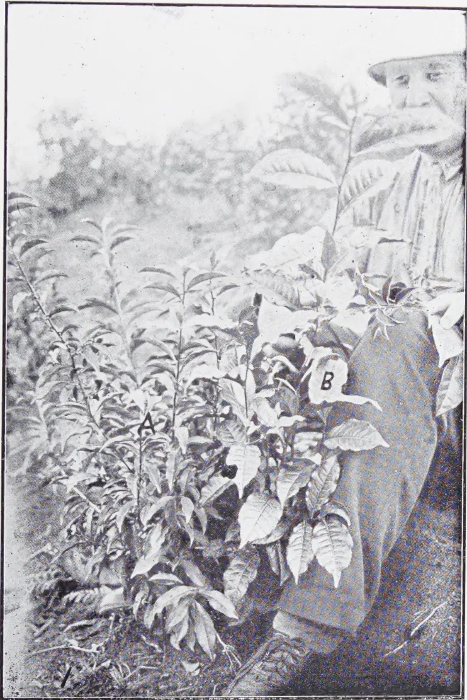
A black and white photograph showing two two-year-old tea bushes, labeled A and B, growing in a field. A man in a hat and uniform stands behind the bushes, partially obscured. Bush A has smaller leaves, while Bush B has larger leaves.Plate 1.
Two years old bushes of different varieties, grown from three seeds planted in one hole :
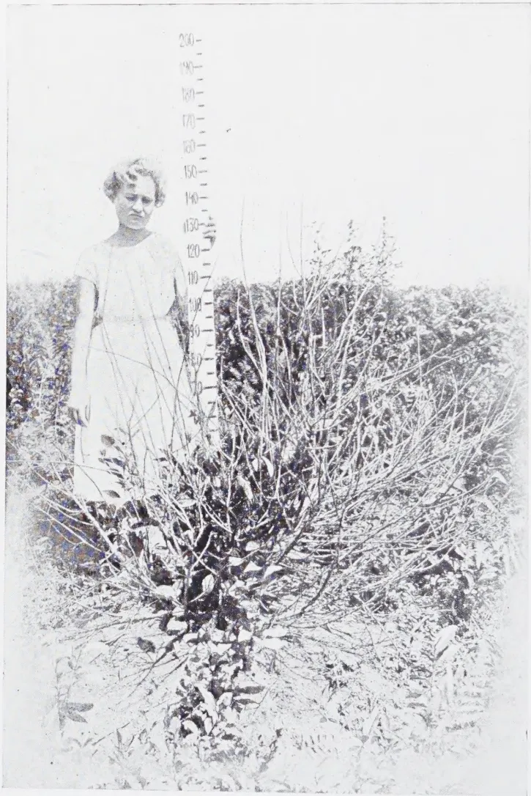
Plate 2.
A hybrid with desirable characters of the Southern varieties but not frost-resistant (a character of importance in Northern tea regions). Every winter its branches fall off due to frost and every spring it produces new shoots.
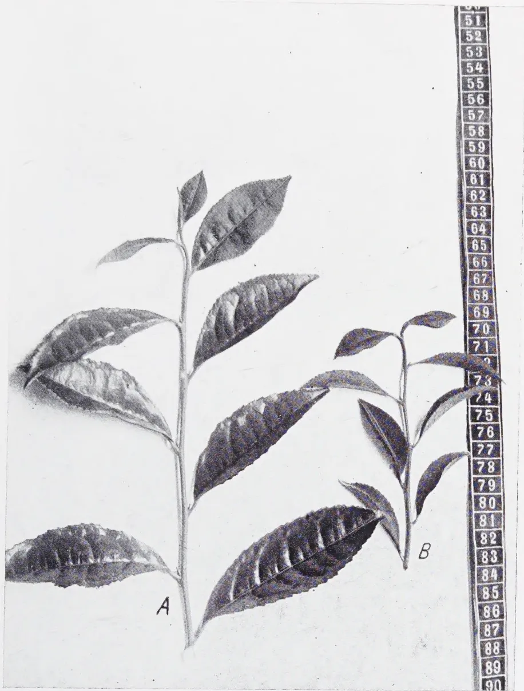
Plate 3.
Two forms of frost-resistant hybrids :
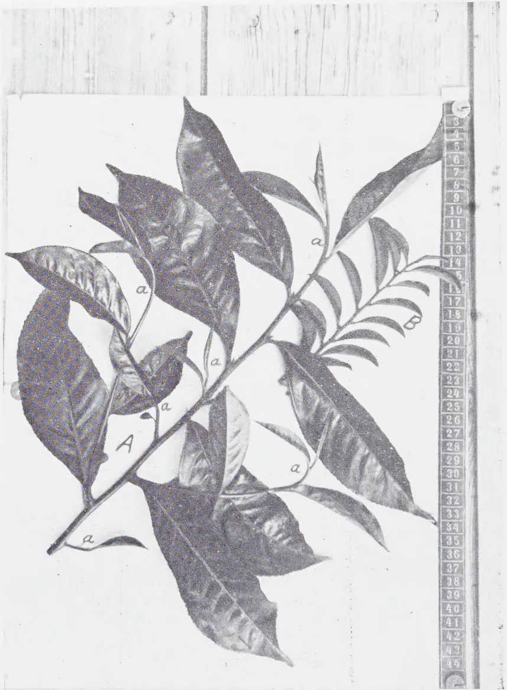
A detailed botanical illustration of two tea shoots, labeled 'A' and 'B'. Shoot A is a productive form, showing a main stem with several large, ovate leaves and a smaller, curved branch labeled 'a'. Shoot B is an unproductive form, showing a main stem with a cluster of smaller, lanceolate leaves and a smaller branch labeled 'a'. The illustration is set against a light background with a vertical ruler on the right side, marked from 3 to 44. The ruler is used for scale, with the shoots appearing to be approximately 30-35 units long.Plate 4.
Shoots of the same age :
The percentage of bushes of low quality in the tea gardens of Georgia is very high, therefore even a partial improvement of the poorest bushes by means of grafting may increase the yields by 160 per cent. approximately.
This increase varies in dependence with the percentage of poorly yielding hybrids in a tea garden. Some kinds of southern large leaved hybrids are remarkable for their growth rate, their productivity and the length of their growing period. Tea gardens which consist of such large-leaved hybrids may produce still larger crops. Plate 4 represents shoots of two hybrids of the same age, 4A — a southern sort with numerous plucking shoots and 4B — a northern Chinese sort of a low productivity. The shoot B has only one point of growth, while the shoot A during the same period of time has formed 6 points of growth (at A, a) owing to its high vegetative power. Obviously yields of the bush A are several times larger than those of the bush B.
Tea growers have to create homogeneous gardens consisting of productive bushes of high quality immune to diseases and injurious insects. It is impossible with the present method of propagation by seeds. Tea plants, like many other cross-pollinating trees and bushes, segregate when propagated by seeds and produce very varied forms; all kinds of combinations between the characters of the parent plants.
Many of these forms (often 50-98 per cent.) possess undesirable characters. The fixation of desirable characters and creation of constant forms by means of usually adopted methods of selection and propagation by seeds takes about 30-60 years. We therefore must try to find other methods of solving the problem, though of course we ought not to suspend our work on breeding constant sorts by means of propagation by seeds. The method of vegetative propagation has been known for a very long time and used in propagating trees and even some annual plants. A great number of first-rate fruit and ornamental plants have been obtained by this method of propagation. Its importance for commercial tea growing is obvious. It helps to increase the productivity of the plantation and the quality of the leaf, to select sorts immune to diseases and injurious insects and to graft tea on stocks resistant to root diseases. This method is matchless for the scientific investigatory work, which requires all factors, but the one under investigation, to be absolutely identical.
202In field conditions we have at least two unknown factors: (1) the factor under investigation, and (2) the heterogeneity of the tea bushes. The difference between the yields of the experimental and the control plots may be due both to the factor under investigation (manuring, mulching, cultivation, pruning, etc.) and to the occasional combinations of high-yielding or low-yielding bushes.
Even in our laboratory experiments with plants grown in pots we have to work with extremely heterogeneous tea plants.
Vegetative propagation supplies absolutely homogeneous plants, both for field and laboratory experiments. This method may also be used for growing seed-gardens of the best varieties, and it excludes the possibility of crossings between the good and the bad sorts of the tea plant. Vegetative propagation is of great value in the work of selection for it helps the fixation of the best sorts in a shorter time than is possible from seeds.
The question of vegetative propagation of the tea plant has not been sufficiently elucidated in literature. Most authors believe it impossible.
In order to decide the question I first carried out a small number of experiments at Sukhum in 1928, 1929 and 1930. Beginning with 1931 I have been carrying out experiments on a larger scale at Ozurgeti-Anasenli, the greatest part of the work having been carried out in 1933-34, when the technical executant of my orders was the gardener Sh. Oragvelidze. All the methods of vegetative propagation were tested, viz.
All of the above methods proved to be applicable to the tea plant, simple layering being the simplest and cheapest method of obtaining plants with their own roots, while the best methods of grafting are summer budding in field conditions and winter bench grafting in hot-house conditions.
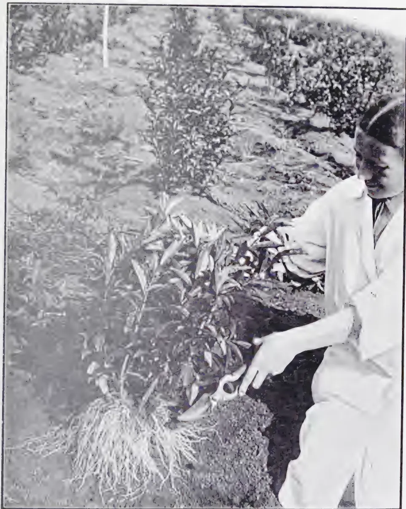
A black and white photograph showing a person in a light-colored uniform kneeling in a field, demonstrating simple mound layering. The person is pointing to a small mound of soil next to a plant. The background shows rows of similar plants and a white marker post.Plate 5.
Simple mound layering.
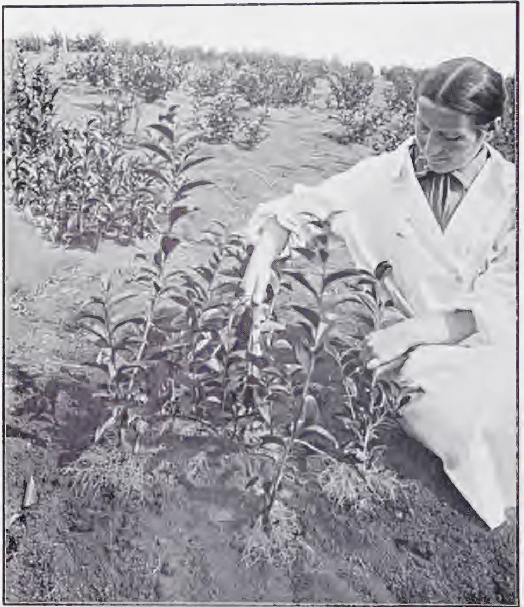
A black and white photograph showing a person in a white lab coat working with tea plants in a field. The person is kneeling and tending to a young tea plant in the foreground. In the background, rows of tea plants are visible, and a parent plant with shoots is laid out for propagation.Plate 6.
Simple layering. Rooted layers at the moment of their separation from the parent plant. In the background the parent plant with shoots laid for propagation.
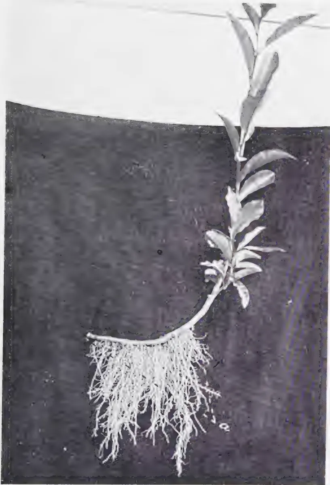
A black and white photograph of a rooted shoot, likely a tea plant, showing its root system and leaves. The shoot is positioned diagonally, with its root system at the bottom left and its leaves extending upwards to the right. The root system is dense and fibrous, with many fine roots visible. The leaves are small, oval-shaped, and arranged alternately along the stem. The background is dark and textured, possibly soil or a dark surface.Plate 7.
Simple layering. /A rooted shoot, separated from its parent plant and ready for transplantation.
a. Young roots, which developed along the underground part of the shoot.
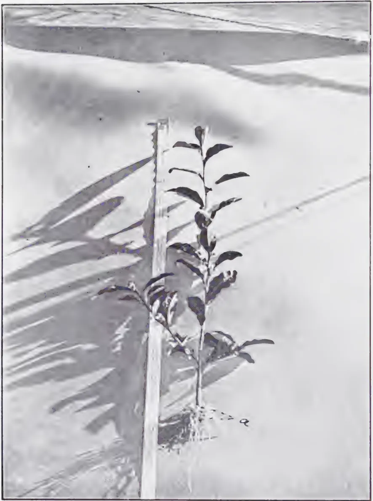
A black and white photograph showing a young plant shoot with several leaves, positioned vertically next to a wooden stake. The shoot is rooted in a small mound of soil. The background is a bright, slightly hazy landscape with a horizon line. The image is framed by a thin black border.Plate 8.
Mound layering with ringing. A rooted shoot separated from the parent plant and ready for transplantation.
a. Young roots concentrate at the base of the shoot above the wired place.
203The following types of layering were tested:
(a) Simple mound layering (Plate 5). The leaves on the lower part of the shoot were removed and the earth mounded round the bush in the usual way i.e., in the same way as in the case of the potato. This method gave satisfactory results (87 to 88 per cent.).
This is the most simple and rapid and the least troublesome method of propagation. Further experiments proved the removal of leaves unnecessary: it does not influence the percentage of rooted plants. Rooting of 2-3 year old bushes took place in 2-3 months after mounding. Plate 5 represents rooted shoots with a great number of young roots. Such shoots may be separated from the parent bush and transplanted into the field. They may be safely used for new plantings.
(b) Simple layering (Plate 6). Branches were bent downwards, placed into small trenches 10-15 cm. long, pegged down in several places and covered with a layer of earth 20-25 cm. thick. The upper free ends of the shoots were fastened to vertical pegs. This method gave also good results (80 per cent. to 90 per cent. rooted plants). Plate 6 represents rooted shoots. Such shoots may be separated from the parent bush and transplanted into the field.
In the background there may be seen parent plants with laid shoots. Plate 7 represents a shoot with young roots ready to be transplanted.
(c) Mound layering with ringing. The shoots are ringed at their base (a ring of bark 2-3 cm. wide is removed) and the earth round the bush is mounded to the height of 25-30 cm. Instead of being ringed the shoots may be wired, i.e., surrounded at their base by several turns of wire.
This method also gave a great percentage of rooted shoots. (81-92 per cent.) Plate 8 represents one of the rooted shoots. Such a shoot is ready to be transplanted into the field
(d) Continuous Layering.—This method consists in pegging down the whole shoot, placed into a trench about 10 cm. deep and 7 cm. wide. The internodes of the shoot are covered with earth and the nodes remain uncovered, as well as the end of the shoot with 3-5 leaves. The young shoots, which grow from the
204nodes (Plate 9) produce roots and at the end of the season are ready for transplantation. This method gave 95-100 per cent. of rooted plants. The percentage of rooting is estimated in relation to the number of layers, not to that of the resulting shoots (the latter is much greater). Plate 9 represents young rooted shoots produced by one layer.
(e) Simple Layering with Wounding.—This method is similar to that, described in paragraph (d) above, the only difference being a wound made at the base of the layer, at the place where the layer is covered with earth: either an oblique cut is made with a knife and a small piece of wood inserted into the wound, a piece of wood and bark cut off, or the layer is slightly fractured. The percentage of rooted plants attains 94-100 per cent.
(f) Layering with Wounding and Application of Potassium Permanganate.—This is similar to that described in paragraph (e) above with the addition of a small dose of potassium permanganate applied as a stimulant. The percentage of rooted shoots, ready for transplantation is 80-86 per cent.
(g) The Dahlem Method of Layering.—The bush is cut down at the ground level, the young shoots, which grow out of the bush are wired at the base, when they are 20-25 cm. high and covered with earth, the mound being first made 10-15 cm. high, then heightened when the shoots grow longer, up to the final height of 25-30 cm. This method gave 85-90 per cent. of rooted plants. Table 2 represents the results of our investigations:
TABLE 2| Method of layering | Percentage of rooted plants |
|---|---|
| 1. Simple mound layering | 87-88 |
| 2. Simple layering | 80-90 |
| 3. Mound layering with ringing | 81-92 |
| 4. Continuous layering | 95-100 |
| 5. Simple layering with wounding | 94-100 |
| 6. Layering with wounding and application of potassium permanganate | 80-86 |
| 7. Dahlem method of layering | 85-90 |
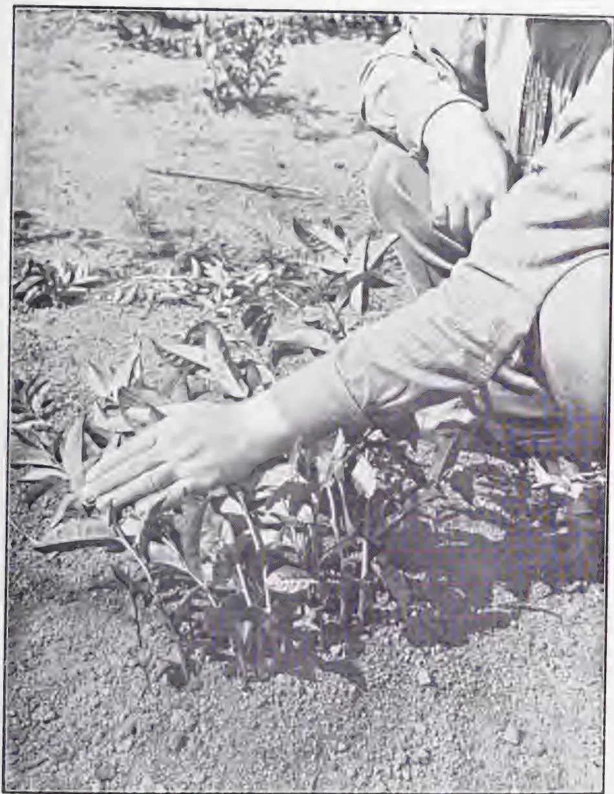
Plate 9.
Continuous layer. Young shoots, produced by a single layer.
This image is a blank white page. It contains no text, figures, or tables. There are a few very small, dark specks scattered across the page, which appear to be scanning artifacts or dust particles. One such speck is located in the upper right quadrant, and another is near the bottom right corner. 205All methods of layering give a high percentage of rooted plants and every shoot produces a great number of roots, independently of the method used. Special stimulation of root growth (wounding, ringing, wiring, application of chemicals, etc.) is unnecessary. Simple mound layering, the most simple method of layering, can give as high a percentage of rooted plants (up to 100 per cent.) as other methods do. In our experiments it was prevented by unfavourable soil conditions. At the beginning of our experiments we had to carry them out on dry eroded plots where soil conditions hampered the normal development of roots. Later on we continued them on soils with a higher water holding capacity and obtained a far higher percentage of rooting, though the plantation was situated on a slope and heavy rainfalls washed away a part of the earth which covered the layers, leaving some of them quite bare and some covered with a very thin layer of earth; its drying up checked the formation of roots.
In such places, where the soil layer was thick enough (20 to 25 cm.) and contained a sufficient amount of moisture we obtained 100 per cent. of rooted plants independently of the method of layering used. Tea shoots strike root easily.
Bushes round which the earth has been mounded, or which have been covered with eroded soil above their collar produce a number of adventitious roots at any point of a shoot or a branch.
These seven years' observations of the author have shown that the percentage of rooted plants depends upon the age of the shoots and the amount of moisture in the soil which surrounds them. The best results are obtained with one and two years' old shoots (up to 100 per cent.) The soil should always be moist, but the amount of moisture should not exceed a certain optimum, otherwise the want of aeration checks rooting.
No less than 200 bushes were used in each variant of the experiment and each bush was individually characterised. We tried to use similar bushes as far as it was possible with our heterogeneous populations of the tea bush. In general we tried to follow the fundamental rule of experimental work: "all conditions equal, except the one under investigation," though it was not always possible because of the heterogeneity of our tea plantations and an unequal distribution of moisture throughout the soil, due to erosion. We began our experiments in May.
206The results of the first year's experiments were summed up in September, those of the following years in April before transplantation, i.e., at the end of one growing cycle. On each bush there were counted shoots, reserved for layering and the percentage of rooted shoots was calculated relatively to their number. Rooting took place in 2 or 3 months after layering, but rooted shoots were not separated from the parent plant before autumn or spring, i.e., before the season of planting.
Besides the above-mentioned, there was tested the Chinese method of layering. Two year old shoots were chosen and placed in vessels (bamboo tubes, broken pots, tins etc.) filled with earth (Plate 10). In autumn the vessels were removed and rooted shoots cut off and planted into the field. Whilst the most troublesome this method gives but 50-70 per cent. rooting because the soil in the vessel dries up without artificial watering.
It is a well known fact that in favourable conditions tea roots produce shoots. In order to obtain as many shoots as possible we uncovered the roots of some tea bushes to the depth of 10 to 15 cm. The same summer they produced shoots. In autumn, or early spring, shoots with pieces of roots were separated from the parent plant and transplanted into the field. This method gives a great number of young plants, but weakens too much the parent plant and is more troublesome than simple mound layering.
At the suggestion of one of my collaborators D.Sh. Eristavi, the method of simple or common layering was used to improve our tea gardens. Up to 1929 tea bushes were usually planted at the distance of 1m × 1m, or 1.25m × 1.25m from each other. Beginning with the year 1929 they have been planted in contour rows or espaliers to prevent erosion. In order to adapt old gardens to these new requirements it was the custom to plant seeds between the old bushes at the distance of 30 cm. from each other with the purpose of obtaining in future continuous espaliers by means of pruning new bushes to a certain form. Plants grown from seeds, as to their development, were far behind the original bushes, while seedlings, transplanted from nurseries, took root but poorly. The method of simple layering gave very good results in obtaining continuous espaliers and is at
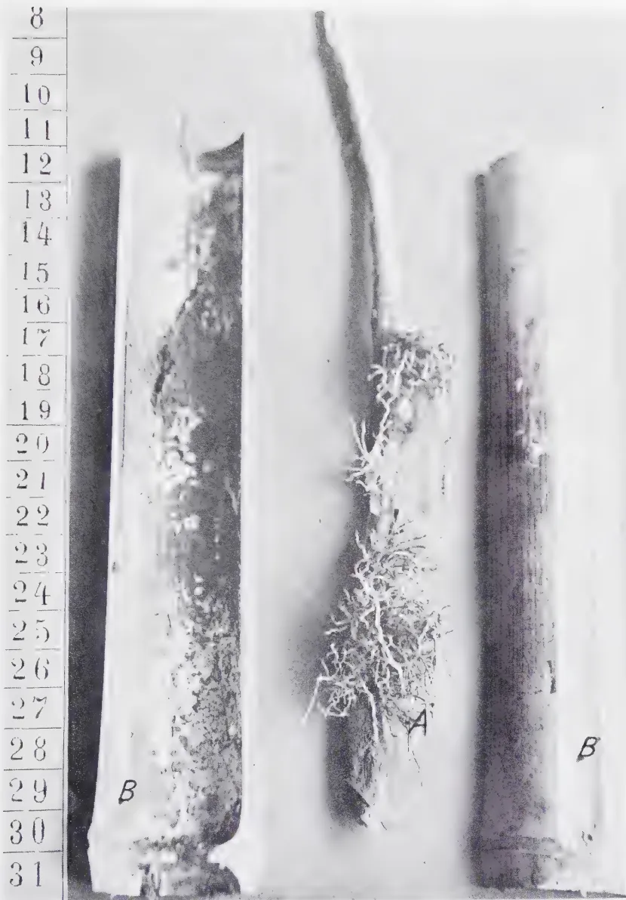
Plate 10.
✓ Chinese layering :
A. A rooted shoot.
B. Bamboo tubes into which the shoot is placed before being covered with earth.
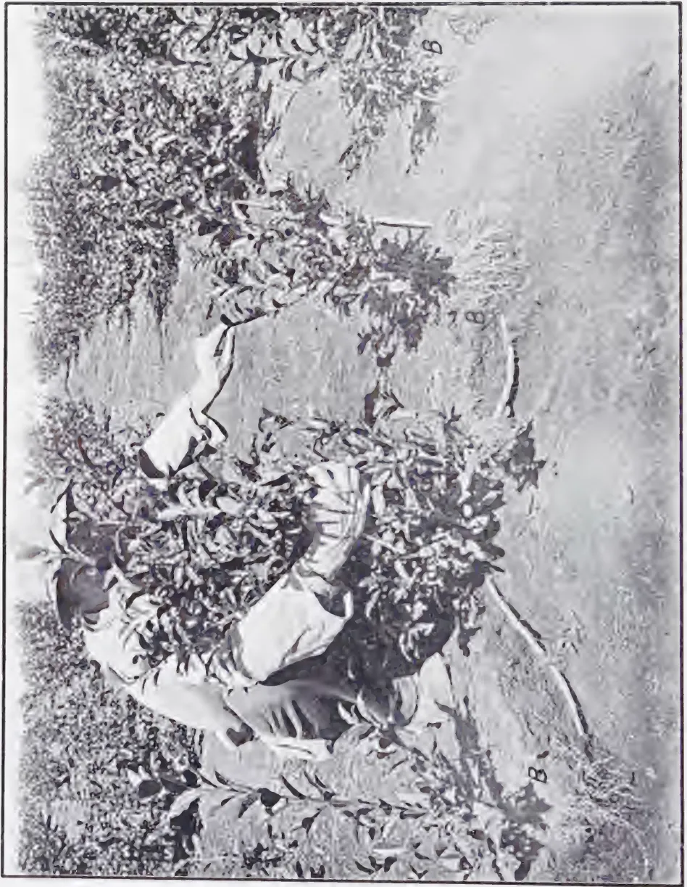
A black and white photograph showing a person in a field of tall grass. The person is wearing a light-colored shirt and dark pants, and is bent over, working with plants. The plants are tall and have small leaves. The background shows a grassy field and some trees in the distance. The image is framed by a black border.Plate 11.
Grasses, Leptilon, arranged out in order to fill up the space in a ten rows and to
207present adopted in our tea industry. Plate 11 represents this method of obtaining continous rows. A — is the parent plant, B — the young bushes obtained by means of simple layering (laid in May, photographed in September). At present the bushes have fully developed and formed a continuous espalier.
The examination of Table No. 2 shows, that continuous layering gives the best (95-100 per cent.) results, then comes simple layering with wounding (94-100 per cent.) It should be remembered that other methods could be as successful, but were applied in unfavourable conditions due to erosion: the soil, which covered the layers was partly washed away and the rest became subject to drying up.
Bushes, used for our experiments, were 3-5 years old and no difference was noticed in the rooting of their layers. The best results were obtained with 1 and 2 year old shoots, 1, 2 and 3 year old shoots having been used for our experiments. Tea shoots produce roots both in their nodes and along their internodes in contrast with those of some other trees and bushes, which produce roots in their nodes only. A young tea plant (either a seedling or a plant obtained by means of vegetative propagation) usually produces roots below its collar, but in case the collar is covered with earth, a great number of roots are produced above it. Thus the rule, adopted in horticulture, never to plant a tree so deep as to have its collar covered, is not applicable in case of a tea bush.
Beginning with the spring 1932 we have observed the growth of tea bushes, propagated by layers. They were planted on April 17, 1932 in the usual way, the planting distance being 1m × 1m. They did not receive any manuring and were watered but once — at the time of planting. The young plants took root and continued their growth. The percentage of plants, which took root and gave a good growth was as follows: in the case of (1) Simple mound layering 72 per cent, (2) Mound layering and ringing — 79 per cent, (3) Simple layering 60 per cent, (4) Continuous layering 72 per cent, (5) Layering with wounding 66 per cent, (6) Layering with wounding and application of potassium permanganate 68 per cent. It seems natural that all plants, grown out of a layer, once having taken roots and transplanted, should continue their growth independently of the method of layering. The control experiments, carried out the next year — 1933 showed that all rooted shoots, independently of the method of layering, take root well and continue their growth (about 94 per cent, with the exception of a few bushes (about 6 per cent)).
208The difference between the methods of layering, observed in 1932 was due to soil conditions: the soil, externally absolutely uniform proved to be extremely varied as to its moisture content and fertility. The next year we repaired this mistake and obtained with each method of layering 94 per cent. of vigorously growing bushes.
Seedlings transplanted at the same time from nurseries gave a much lower percentage of rooted plants (30-50 per cent). It is probably due to their producing one taproot and a few lateral roots with an insignificant number of small rootlets, while plants, grown from layers have a great number of small roots and consequently a far larger root surface in contact with the soil.
We also observed the rate of growth of tea bushes grown from layers.
The first (1932) year's figures are as follows:
There is no marked difference between the check (seedlings) and the experimental bushes, there is perhaps a slight difference in favour of the latter, the average for seedlings being 8.9 cm. and for bushes, obtained by certain methods of layering it is 9.8, 10.7 and 12.3. It is again due to their root system being richer than that of seedlings. It may be said, that both kinds of plant stand transplantation equally well.
A year later (1933) the rate of growth of plants, obtained by means of layering, increased and they soon equalled plants, grown out of seeds, planted in 1931.
Plate 12 represents such a plant, grown in a poor soil. The soil was so poor, that Ricinus communis, planted for shade in the spring, attained the height of 5-40 cm. only, while on other soils it grows 150-180 cm. high.
Many specialists in tea growing did not believe vegetative propagation of the tea plant possible.
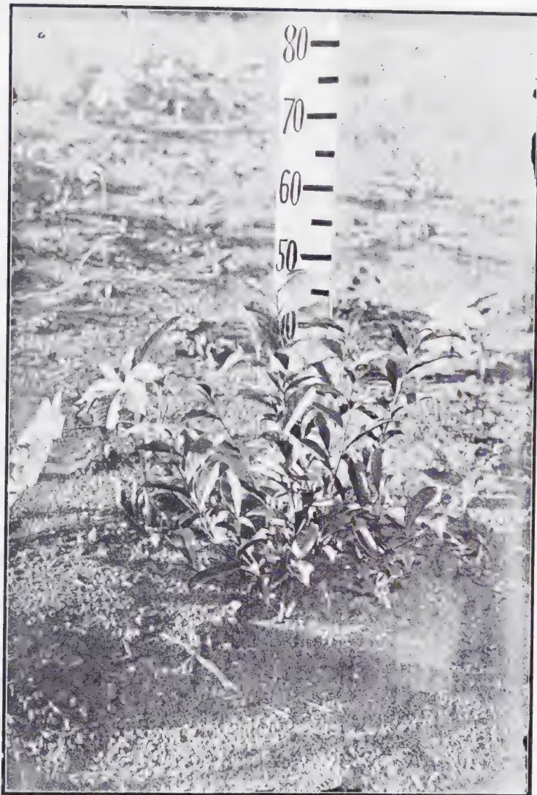
A black and white photograph of a Ricinus plant (castor oil plant) growing in poor soil. The plant is a two-year-old shoot, and a vertical scale is placed next to it for height measurement, showing markings from 40 to 80. The plant is surrounded by other vegetation in the background.Plate 12.
A two years old plant : the shoot was laid in 1931, separated from the parent plant and transplanted in June 1932, photographed in August, 1933. (Poor soil : a Ricinus planted for shade developed but poorly).
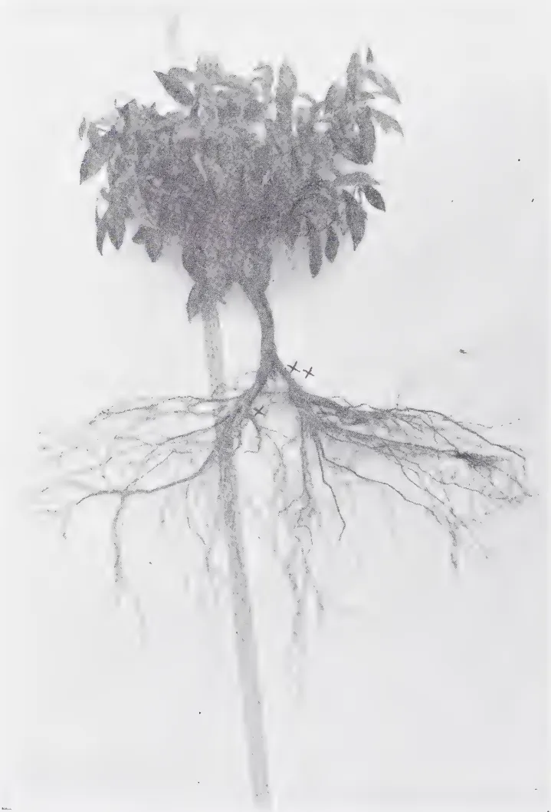
Plate 13.
The root system of a two years old tea bush, grown out of a bow-shaped layer, separated from its parent plant and transplanted in May 1932, dug out and photographed in May 1934.
x. Roots, first produced by the layer.
xx. Roots, produced above the former after the shoot had been separated from the parent plant and transplanted into a deeper hole.
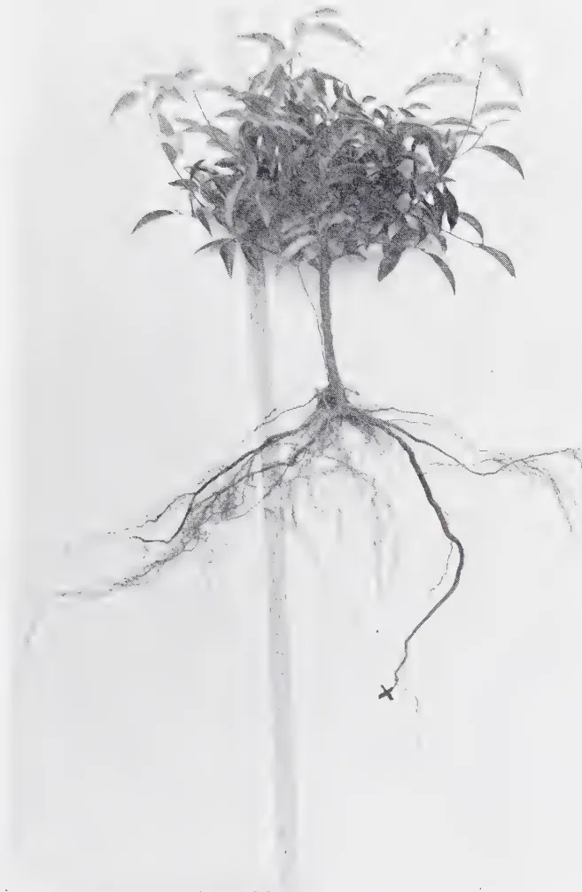
Plate 14.
The root system of a two years old bush, grown out of a wired layer separated from the mother plant and transplanted in May 1932, dug out and photographed in May, 1934. It had possessed a well-developed root system, but fine deep-reaching roots were broken in digging. x.
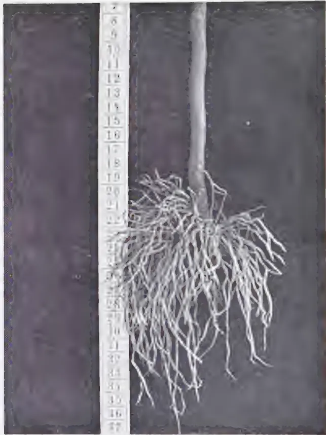
Plate 15.
A straight shoot with numerous roots at its base. This type of root system is obtained by means of ringing, wiring or twisting the shoot.
209As to the high percentage of rooted plants they thought these figures to be unreliable because they did not believe this kind of roots to be lasting and thought that later on both the roots and then the plant would die, especially when separated from the parent plant and transplanted into the field. They used to say: "The second stage of the development of a layer or a cutting, the formation of a constant root, is the critical moment of the work; as yet nobody succeeded in obtaining practical results with the only exception of Formosa."
Both plant physiology and practical horticulture show that obtaining primary roots, which absorb water and the nutritive substances it contains, guarantees the development of roots in case the plant is properly cared for. The cause of the failure of other investigators to obtain a permanent root system is the want of proper care and of favourable soil conditions.
We investigated the development of the root system of vegetatively propagated tea plants in field conditions: our observations showed that primary roots may dry up and die off if the bush is planted into a roughly cultivated soil: between single clods of earth, there remain large spaces, where the air may circulate freely and dry up the soil. In such a soil young tender primary roots die of want of moisture.
Before planting young bushes with such tender roots the soil should be thoroughly prepared, especially that part of the soil which will be in contact with the roots; the soil particles must adhere closely to the roots, therefore the soil should be reduced to powder, then pressed round the roots of the plant and immediately watered. The water washes the soil particles down and makes them adhere to the surface of the roots. In case it cannot be done in the field, the young bushes should be transplanted for one year into nurseries. They may be transplanted into the field only after the formation of a developed root system.
Transplantation is carried out in the same way as in the case of seedlings.
Plates 13 and 14 represent the development of the root system of two years old plants obtained by means of layering. After having been separated from the parent plant, in May, 1932 the one year old shoots were immediately transplanted into the field. In May, 1934 the plants were dug out and photographed.
210(1). Tea may be propagated by every method of layering: (a) Simple mound layering (87-88 per cent.), (b) Simple layering (80-90 per cent.), (c) Mound layering with ringing (81-92 per cent.), (d) Continuous layering (95-100 per cent.), (e) Simple layering with wounding (94-100 per cent.), (f) Layering with wounding and application of potassium permanganate (80-86 per cent.), (g) Dahlem method of layering (85-90 per cent.), (h) Chinese layering (50-70 per cent.), and, (i) Growing shoots out of roots.
(2). Both the northern (Chinese) and the southern (Assam) varieties as well as intermediate forms and hybrids are equally easily propagated either by layer or by shoots, grown out of roots. The age of the laid shoot influences the per cent. of rooting. One year old shoots are best for layering.
(3). The water content of the soil influences the rooting of layers. The nearer it is to the optimum, the higher is the per cent. of rooting and vice versa.
(4). Tea bushes obtained by different methods of layering stand transplantation well and take root easily (94 per cent.)
(5). They are not backward in their growth in comparison with seedlings.
(6). Layering is the cheapest and simplest method of vegetative propagation (in comparison with other methods which are propagated by cuttings and grafting).
(7). Layering may be recommended for obtaining: (a) uniform commercial plantations of best high yielding bushes, (b) plantations of bushes used for further propagation and of seed gardens consisting of definite good varieties, (c) heterogeneous bushes for experimental field or laboratory work.
(1). It may be recommended to use straight shoots with roots at their base (Plate 15) rather than curved shoots with roots along their underground part (Plate 7). Shoots of the first type show a better power of orientation in the soil conditions and develop their roots in the proper direction, while those of the second type waste their energy in producing a great quantity of roots all along the underground part of the shoot.
211Shoots of the first type may be obtained by every method of layering in case they are placed vertically from the base, (the ringed or twisted place), of the underground part (25-30 cm.) up to the tip of the shoot.
(2). One year old shoots for layering should be preferred to older ones.
(3). Of all methods of layering simple mound layering is the cheapest and simplest one.
(4). Ringing, wiring or twisting the shoot stimulates the production of roots and increases the percentage of rooting.
(5). The best bushes, reserved for propagation are pruned in winter or early in spring, before the beginning of the growing period, to the height of 5-10 cm. above the surface of the ground. The same year or the next year in spring the earth is mounded round the newly-produced shoots. In the first case it may be done when the shoots are 20-25 cm. high so as to leave 2-3 leaves above the mound for further growth, later on a second mounding is carried out in order to make the mound 25 cm. high (or the underground part of the shoot 25 cm. long). In autumn or in spring such shoots have produced roots and are ready for transplantation. In the second case the shoots are left without mounding till next spring, when the weak shoots are removed and the earth is mounded round the bush up to the height of 25 cm. from the base of the shoot. Next autumn or spring the shoots may be separated from the parent plant and transplanted into the field. In the second case the whole process takes two years and the best way to obtain planting material for each year is to divide the original bushes into two parts and to prune them alternately; first the one half, and the next year the other. Thus half the bushes produce roots, while the other produce shoots, for the next year's mounding.
A continuous removal of shoots weakens the parent plant, especially when it is done every year, and an intensive manuring, (mineral or organic), is indispensable; especial attention should be paid to nitrogen nutrition of the plants.
(6). In large tea gardens there should be formed plots of best plants reserved for further propagation, which could give material for commercial plantings.
(7). Only shoots with well-developed roots should be transplanted into the field, weaker shoots should be first transplanted into nurseries and later on, after they have developed strong roots, they may be transplanted into the field.
(To be continued)
212A. W. R. JOACHIM, PH.D.,
AGRICULTURAL CHEMIST
DURING the last two years the Department has devoted a good deal of attention to ginger cultivation and curing with a view to making the Island self-supporting in respect of green and dry ginger, and if possible, to creating a small export trade in the latter commodity. This article is therefore written with the object of supplying potential producers with practical information on the processes of ginger curing.
There are two well-known methods of curing ginger: (1) sulphur curing (2) ordinary curing. Sulphur curing has a number of advantages over ordinary curing. The product obtained is much lighter in colour, more plump, and of better keeping quality and fracture than ordinary cured ginger. But with the introduction of legislation in most of the purchasing countries preventing the sale of ginger containing sulphur dioxide, this method is now of very limited application. Last year a thorough investigation of the process was made by the Chemical Division, and a full account given in The Tropical Agriculturist of May, 1933. Samples of sulphured ginger sent to the Imperial Institute for valuation were reported on favourably with regard to appearance, aroma, flavour and pungency, but owing to the prohibition of the sale of sulphured ginger in Great Britain, none of the samples were saleable. It was recommended however, that attempts be made to prepare dried ginger without the use of sulphur, as the variety of ginger grown in Ceylon appeared suitable for the purpose.
Large scale trials were accordingly made this season with the curing of no less than four tons of green ginger by the ordinary process. For curing purposes two varieties of ginger are available in Ceylon — 'local' ginger which appears to be a degenerated type of Calicut ginger and a variety grown in the
213neighbourhood of Nugegoda and hence spoken of as "Nugegoda ginger", which is a mixture of a Cochin variety and the local type. There is in addition a small quantity of China ginger which is only suitable for preserves or for use as green ginger. The local variety occurs in hands of comparatively small thickness, unlike typical Calicut ginger which has large, plump hands. It has generally numerous fingers which necessitate breaking the ginger into small pieces before curing and make peeling a difficult and expensive item. It is very fibrous, like Calicut ginger, and when peeled is of a pale-cream colour. The typical Cochin ginger has fewer fingers, is much less fibrous and is generally plumper, and when peeled is of a bright canary yellow colour. The Cochin variety from Nugegoda ginger if cured in the proper way gives a plump, light buff-coloured product, of good aroma, flavour and fracture. The local ginger on the other hand gives a thin, much darker coloured and more fibrous product, but otherwise is not different to Cochin ginger. Every attempt should therefore be made, if ginger is to be cured for the foreign market, to grow the former variety, small-scale selections from which are being multiplied by the Agricultural Department.
For ordinary curing it is absolutely essential to have a continuous spell of at least ten days of good sunshine and a plentiful supply of clean water. Normally 7 to 8 days of good weather will be sufficient. Should rain fall on the material in the interval, especially during the first four days, the product becomes quite dark in colour and mildewed and gives a musty odour and flavour. No amount of subsequent washing and drying will improve its appearance and flavour. Ginger curing will therefore be possible only during a very limited period. Generally, the crop planted in March-April is ready for harvesting the following January, and curing should be begun as soon as possible after that when a spell of dry weather is assured. In most ginger growing districts February-March will be found to be a suitable period for the purpose. If a light coloured product is desired, curing should be started as soon as the crop is harvested. It is advisable to harvest only the quantity required for a day's peeling. If for any reason it becomes necessary to harvest the whole crop, the rhizomes should be placed in a well-aired room in small heaps, dry soil being spread over successive layers of ginger. The rhizomes to be cured are put into a tank of water
214and thoroughly cleansed of adhering earth. The water is drained off and the ginger allowed to soak overnight in a fresh supply of clean water. This operation is especially necessary for clean peeled ginger. Next morning the ginger is peeled. A special knife has been devised for the purpose, and is shown in Plate I. It consists of a thin iron blade about half inch broad at the base and tapering to about a tenth of an inch at the tip. In length it is about 4 inches. One face of the blade is flat, while the other has a bevelled edge. The knife as designed scrapes but does not cut the peel, the essential oil which appears to be concentrated just below the skin being thus retained. It has also the advantage of both clockwise and anti-clockwise working.
Peeling may be either rough or clean. Rough peeling consists in the removal of the peel from the broad faces of the rhizome and sometimes from the side face as well. No peeling is done between the fingers. For the local market, rough peeling is all that is necessary. For the English market however, clean peeling is essential. This is a much more difficult and slow task and more expensive. Care should be taken to minimise as much as possible the breaking of the hands when peeling between the fingers. Unless the prices obtained for clean peeled ginger exceed Rs. 35.00 per cwt. it is very doubtful if it will pay to produce such ginger. A woman can ordinarily rough peel about 28 lb. of raw ginger a day. Individuals may peel up to 40 lb. at 30 cts. a day, rough peeling will cost Rs. 7.20 for 6 cwt. of green ginger, the equivalent of 1 cwt. of dry ginger. Good clean peeling, is much more expensive, and it is our experience that not more than 10 lb. per day can be expected from an average peeler. Up to 14 lb. can however be cleaned by expert peelers. The cost of clean peeling a cwt. of dry ginger would work out to about Rs. 20.00.
Immediately the rhizomes are peeled they are put into water and the gummy exudation removed by washing. This is very essential if a light coloured product is to be obtained. The ginger is then transferred to a tank where it is washed in successive changes of clean water and then allowed to soak in water overnight. Washing is one of the most important operations in ginger curing.
Next morning the ginger is again washed in clean water and transferred to bamboo or cement barbecues to sun dry as soon as the mist has lifted. Wherever possible, drying on a slab
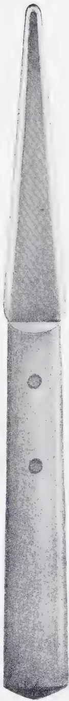
CROSS SECTION
OF THE BLADE
Photo.
L. S. Bertus
Plate I. Ginger Peeling Knife
This image is a blank white page. It contains no text, figures, or tables. There are a few very small, dark specks scattered across the page, which appear to be scanning artifacts or dust particles. One such speck is located in the upper right quadrant, and another is near the bottom right corner.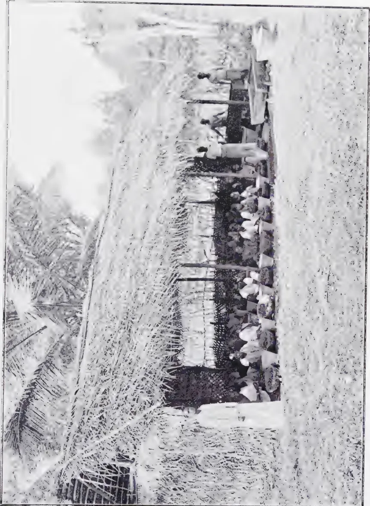
A black and white photograph showing a group of people working in a large, open-sided structure with a thatched roof, peeling and washing ginger. The structure is filled with long rows of ginger plants. Several people are visible, some standing and some sitting, engaged in the work. The background shows a hilly landscape with trees.Photo.
Plate II, The Peeling and Washing of Ginger
L. S. Bertus
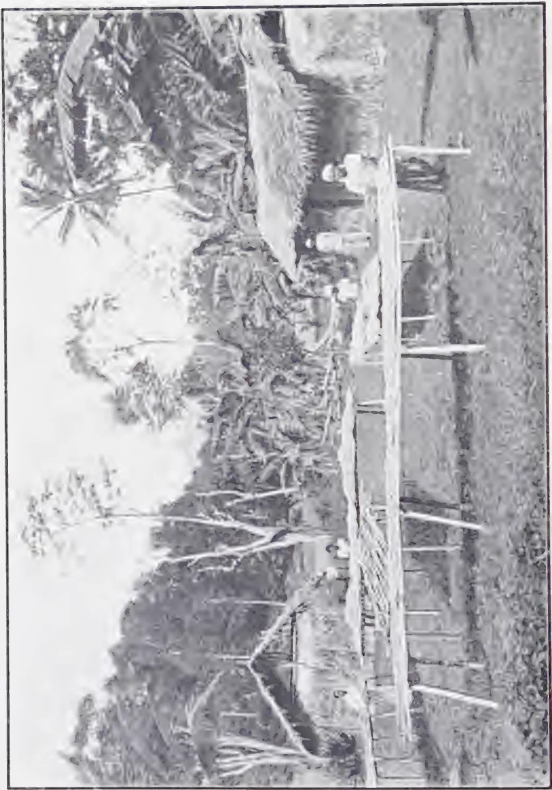
Photo.
Plate III. The Drying of Ginger on Bamboo Barbecues
L. S. Bertus
215of rock is advised. An important task in ginger drying is turning. Especially on the first day, every hand must be turned over. A good practice would be to start turning the hands at mid-day. On subsequent days they should be turned twice or thrice, but care should be taken that in handling the ginger is not broken. Drying should proceed for 5 to 6 days accompanied by regular turning, after which time, if the weather has been favourable the rhizomes should be quite dry to the feel. On the sixth or seventh day, the ginger is again well washed in clean water. The second washing improves the colour appreciably and is only required when preparing clean peeled ginger for the foreign market. Drying is continued for 3 or 4 days after the second washing, when the ginger should be ready for bagging. On no condition should bagging be done if the ginger is not thoroughly dry. Good dried ginger will not appear damp to the touch, and would give a sort of ring when lifted and dropped. Even after bagging, it is advisable to expose the ginger periodically to the sun. Unless ginger is thoroughly dried it is very liable to mould attack in storage. The different processes of ginger curing are shown in Plates II and III.
It will be observed that crude peeled dry ginger from India sold in the local markets, has often the appearance of being earth soiled. On enquiries made it is learnt that such ginger is prepared with a definite object viz. prevention from mould attack. It is reported to be prepared by soaking peeled ginger, for an hour or so in a mixture of red earth and water of the consistency of whitewash and then drying. The earth used is understood to be white ant nest earth or a special red clay. The object of this treatment is apparently to give the rhizomes a coating of an adhesive substance which will act as a preventive against mould attack. Clays have the property of adhesiveness and termite nest earth has in addition a quantity of gummy material secreted by these insects. Experiments carried out locally have indicated that termite nest earth is very suitable for the purpose. It has been found that the best stage to soak the ginger in the clay mud is soon after peeling. Such ginger takes a longer time in drying, but it gives a dry, hard final product which does not become damp to the touch even after a spell of rainy weather. This method of curing ginger is, in a way, cheaper than that described, and if it has the advantage claimed
216for it of keeping better, it is one to be advised. But it will not be suitable if the ginger is required for grinding purposes. Ordinary dried ginger has also been soaked in a mud wash and re-dried, but the product is not so satisfactory, the clay coating not being retained to the same extent. From the practical standpoint there would be little advantage in this process, but if by so doing a stock of dry ginger can be prevented from being attacked by mildew, there would be some value in its adoption.
Another modification of the processes of ginger curing is in regard to peeling. In certain parts of India instead of peeling by hand the ginger is treading under foot in tanks after it has been well soaked in water. This entirely eliminates peeling costs, but only the outermost layer of the peel is removed and hence the drying is very slow. It takes from 12 to 15 days to dry ginger locally under these conditions. Further, the rhizomes get broken into small pieces and their marketable value is thus lowered. The practice is not to be recommended for local usage, especially where weather conditions are variable.
Many thanks are due to Mr. H. W. Wegodapola for having carried out the work detailed above under my supervision. To him is due the credit of having devised the peeling knife described in this paper.
217THE finer types of European Grasses may be called a failure in South Africa. There may be just one or two districts such as our Natal "Mist belt," or the moist extreme Eastern Transvaal where such grasses as Italian Ryegrass will succeed well; but these are exceptional districts of comparatively small area, which do not much affect the general result. For the most part they are found quite unsuitable to our climatic conditions.
The chief cause of their failure is the long winter's drought, which very few grasses, other than native species can live through. And even our native grasses become quite dry and useless during the greater part of the winter. The search for suitable grasses has given us Napier fodder, which is not unlike Uba cane, and the two Paspalums, but the greatest discovery of all is Kikuyu, a native of British East Africa. It has been grown in Natal for about 20 years, and has made a great reputation.
In appearance it may be said to resemble the old coast running grass — the broad-leaved type — but it is many times larger and grows to a height of two feet six inches. A field of it is just a mass of soft-leaved, soft-stemmed, succulent food, close and heavy, in which cattle revel. It does not seed, but propagates itself by means of stem-roots, which form at any node on a stem wherever it touches the soil. Some increase occurs also just under the ground from the base of the plant, but these root-suckers (as they may be called, come straight up, and do not ramify underground like Couch Grass. The root system, therefore, will not become weedy or a nuisance.
A Government Botanist has given his opinion that Kikuyu Grass is by far the richest and best of any grasses we have in South Africa, and has been good enough to furnish us with the following comparative analysis of "Kikuyu" and "Lucerne". Comment is needless:
| Moisture | ... | 8.29 | Fat (Ether Extract) | 1.7 | |
| Protein | ... | 12.36 | Crude Fibre | ... | 33.08 |
| Carbohydrates | ... | 35.06 | Ash | ... | 8.42 |
| Moisture | ... | 8.0 | Fat (Ether Extract) | 2.4 | |
| Protein | ... | 15.5 | Crude Fibre | ... | 34.8 |
| Carbohydrates | ... | 30.06 | Ash | ... | 8.9 |
* From the South African Sugar Journal, Vol. 18, No. 7, July 31, 1934.
218Italian Ryegrass Hay.| Moisture | ... | 8.5 | Fat (Ether Extract) | 1.7 | |
| Protein | ... | 7.5 | Crude Fibre | ... | 30.5 |
| Carbohydrates | 45.0 | Ash | ... | 6.9 |
It is evident therefore, that in Kikuyu Grass we have a first-grade food, yielding a large quantity per acre, and well relished by all stock.
It is easy to cut for hay for there are no hard seed stems, and it cures well.
It has been known to withstand nearly 8 degrees of frost, and is as hardy as Paspalum. Where it is gradually acclimatized on the higher veld it will no doubt stand more than this.
As far as drought-resistance is concerned a writer's experience speaks volumes. A block planted on the day following the last rain, about April 6th, rooted well, and, although there was no rain after that date until early in September, it remained green all the time, and continued to grow. Just at the end of the period it began to look wilted — and no wonder, after five months without water.
Propagation is by means of root division. The life of the plant is so tenacious that every bit grows. In one block of 10,000 plants every bit was grown from pieces of running stem, unrooted. This block was well watered — planted out in early August. When a quantity is available for field culture it may be divided into small roots, and these planted very speedily after the plough. If a three-furrow plough is used it would be planted in each third furrow. If roots are planted three or four feet apart they will easily fill the whole space within three months, during the summer weather.
A boy should follow the planting boy to firm down the soil round the plants with his feet. In this way the planting would be as quick as the ploughing, and three acres per day could be put in with the plough team and two extra boys. The season for planting would naturally be from October until about the end of January — not later than that.
For grazing purposes on coast lands, particularly where the land is of a sandy nature, nothing could be better than this grass.
In their book "Field Crops in South Africa", Messrs. Leppan & Bosman say:
Although Kikuyu under very favourable conditions will occasionally make a sufficiently heavy and upright growth to warrant its being cut for hay, it is essentially a pasture grass.
Description.—It is a perennial grass, making its chief growth in summer. The plant is normally decumbent and has numerous thick rhizomes and runners, by means of which it soon establishes itself in the surrounding soil. On rich soil well supplied with moisture an upright
219growth of 3 to 4 feet will sometimes be made. If required for hay, this should be cut before lodging, which takes place very readily. Although it apparently does not set seed in the Union — the growing season being insufficiently long it frequently reaches the flowering stage.
It is best suited to parts having a warm growing season and a summer rainfall, and has been unfavourably reported on in parts having less than 10 inches of rainfall and in colder parts of high altitude. Nevertheless, it is probably the most drought resistant of the grasses commonly cultivated in South Africa. It remains green until severe frosts occur, and commences to grow earlier in the spring than the veld grasses. In the Eastern Province and in Zululand it is said to remain green throughout the year, and in parts of Natal it seems to become naturalised.
Soils.—Kikuyu will do well on moist soils. At the Dryland Station at Pretoria it has given a growth, on a poor sandy soil, of three feet in height. While it gives very good results on a poor sandy soil, and in some parts often having less than 20 inches of rainfall, the optimum conditions for its growth are found on rich moist soils. On poor soils it responds readily to kraal manure, and doubtless to phosphates where the latter are deficient.
While recent analyses show a variable protein content, in the absence of digestion trials it must be looked upon as very much more nutritious than teff or Boer manna and nearly equal to lucerne. Judging from its chemical analysis, it is outstandingly the most nutritious of grasses grown in South Africa. The experience of farmers who have grown Kikuyu on a large scale bears out this opinion as well.
It is apparently very palatable, as it is eagerly eaten by all classes of stock and is pastured in preference to green barley or rye. It is naturally adapted to grazing, as it is not injured by close grazing and stands tramping well.
It is propagated vegetatively by planting cuttings of culms or rhizomes, which are characteristic for the long time — from four to six weeks — during which they remain capable of growing after having been cut or dug up. Good soil preparation is necessary. One of the most successful methods of planting is to throw the cuttings or rhizomes into every third furrow opened by a single-furrow plough, and then cover lightly with the subsequent furrow. This should be done during the rainy season. If planted in November or December the ground will often be entirely covered by winter. It is quick spreading and very aggressive, more so than quick, when grown in competition with other grasses. It forms a heavy matted growth in a few months.
As its growth is very vigorous, it usually becomes “sodbound” about the fourth year after planting. To remedy this condition it is necessary to plough it over every four years, after which it soon re-establishes itself. No further cultivation is necessary.
220Because of its heavy growth, it is exhaustive on soils, and where economically possible should be fertilized with phosphates and with available kraal or stable manure. From 10 to 20 bags of cuttings or rhizomes are required to plant an acre.
General.—Because of the longevity of the rhizomes or runners when ploughed or dug up, it is likely to prove a troublesome weed, and for that reason should not be planted on land required subsequently for other crops.
It is fast becoming the most popular lawn grass in South Africa, because it remains green longer than Germiston or Bermuda grasses, and because of the better colour. However, it soon invades flower beds, and should not be used in close proximity to these.
In rich soil having plenty of moisture it is valuable as a summer soiling crop.
It has proved useful as a soil binder on dam walls, and also on loose sandy soil, and in preventing erosion in dongas. Further, it can be recommended as a grass for planting in poultry runs; fowls seem very fond of the leaves. Owing to its aggressive nature, it can withstand the ravages of the fowls scratching, etc.
Diseases and Pests.—No serious diseases or pests have so far been reported.
221A few years ago, Russian workers under the leadership of Lyssenko reported that by certain pre-treatment of the seed of crop plants they were able to obtain markedly increased earliness. The method, known as vernalization, was reputed to be economic on a commercial scale, and great claims were made for it. It meant that certain varieties of crops could be grown to maturity in short-season areas in which, under old methods, it was impossible.
If similar results could be obtained under Australian conditions, they would be of great value. For example, certain of the better varieties of maize could be grown in the short-season districts, where under normal conditions they do not mature, and increased yields could be obtained; tomatoes and potatoes could be marketed earlier; and so forth. For breeding work, especially with wheat, it would facilitate crossing of varieties of different maturity.
In view of this, it was decided to try the method at Canberra and the following crops were used: Wheat — varieties, "Early Bird," "Waratah," "Cleveland"; maize, tomato, soybeans, field peas, Sudan grass, and Japanese millet.
In all cases, the methods outlined by Whyte and Hudson were followed. In addition to the standard treatment, others were carried out as follows: wheat was treated with the same quantity of water as for vernalization, incubated at 12.5°C for 24 hours, and sown immediately with the vernalized and untreated seed. With the remaining crops an additional treatment was provided by doubling the period of vernalization. In the case of tomatoes, the seed was placed on blotting paper under conditions favourable to germination for 5 days, and then vernalized at 25°C for 12 and 24 days.
After pre-treatment was completed, the seed was sown under comparable field conditions to determine the results.
In all crops except one, there was no significant difference between the untreated and the treated (vernalized for short or long period or "germinated for 24 hours") for either maturity or yield. The only significant difference was in the case of wheat in the variety "Early Bird". In this case, the "germinated for 24 hours" was significantly greater than the untreated and the vernalized for yield. The difference was demonstrated as being due to a greater ear number per plot. The result is not important, however, since the experiment was not sown until 4th July, which is very late. "Early Bird" is a very early variety and the differences can be attributed to the fact that the plants "germinated for 24 hours" had a good start, and those under the other treatments were not able to catch up. With "Waratah" and "Cleveland," both later than "Early Bird," the differences were not significant.
From these experiments, it is therefore concluded that, under Canberra conditions, vernalization according to the methods outlined does not give any significant difference over the untreated.
* Contributed by J. R. A. McMillan, C. S. Christian, and K. Loftus Hills in the Journal of the Council for Scientific and Industrial Research, Volume 7, Number 3, August, 1934.
222DHALL is largely consumed by vegetarians in different forms either as such or in combination with vegetables etc. Red gram (Cajanus indicus) from which dhall is prepared occupied 28, 88, 98 acres in this Presidency according to season and crop report for 1932-33. Out of this, North Arcot district had 21,958 acres, of which Tirupattur taluk, alone had 6996 acres. Other important districts where red gram is cultivated on a large extent, are in order of rank, Trichinopoly, Bellary, Anantapur, Kurnool, Vizagapatam, Guntur, Ganjam, Salem and Coimbatore. North Arcot district comes fifth in the above list based on acreage. Commercially, Tirupattur produce has a good reputation for its quality. It is therefore proposed to give a short account of how it is prepared for the market.
Red gram is grown in this taluk purely as a rain-fed crop, in red loamy soils mixed either with cumbu or groundnut. Sowing alone with cumbu is the common practice and this mixture occupies 90 per cent. of the total area in the taluk. When raised along with cumbu it is dibbled behind a country plough in lines 3 to 6 feet apart; while with groundnut the distance between the lines varies from 10 to 25 feet, the reason being that the groundnut crop should be free from the shade of this crop.
By way of after-cultivation nothing is done to the crop, but when grown along with groundnut, the soil is dug for harvesting groundnut and this serves as a sort of after-cultivation. In some places where it is sown with cumbu, the land is reploughed and horse gram sown in September. The ploughing up of the field serves as a sort of after-cultivation.
Red gram sown during July-August will be ready for harvest in January. The crop is harvested by cutting the stalks close to the ground; the stalks are then gathered and left in the field for a day or two till they are quite dry and then removed to the threshing floor in the early hours of the morning, to prevent shedding of pods. Threshing is done by beating stalks with pods against bamboo thatties. The gram fallen on the ground is winnowed and cleaned. The immature pods that still stick to the stalks are beaten with sticks and gram collected. In a good year with a fair average rainfall, well distributed, an acre of red gram raised along with cumbu will give about 200 Madras measures of gram.
* By Md. Abbas, B.Sc. Ag., Agricultural Demonstrator, Tirupattur, in The Madras Agricultural Journal, Vol. XXII. No. 7, July 1934.
223Generally merchants purchase gram and prepare dhall, but in a very few cases dhall is prepared by ryots themselves, either for the consumption or for sale. There are two methods of preparing dhall from gram; (a) Large scale or commercial method. (b) Small scale or ordinary method.
(a) The Commercial Method.—Red gram is put in vats constructed of brick and mortar or tubs and allowed to soak in water for about 6 hours. It is then removed and well mixed with wet red earth in the proportion of 20:1, i.e., 20 parts of gram to one part of earth. The mixture is heaped and allowed to remain overnight. In the morning the heap is disturbed and the stuff evenly spread on the ground for thorough drying. If a single drying is not sufficient it is dried again. When it is completely dried it is again mixed with a thin solution of red earth, heaped up and left overnight. In the morning it is dried completely. The gram is then cleaned of stones, dirt etc., by sieving and winnowing and broken in stone mills generally of 18 inches in diameter and 4 inches thick. The husk is winnowed, broken pieces separated and marketable dhall is obtained.
(b) Ordinary Method.—This method is slightly different, usually adopted by ryots for preparing dhall for their home consumption. This process involves much labour and time and the dhall obtained is of better quality and tastes well compared with the stuff prepared by the previous method. Red earth is made into a thin paste and poured over the heaped up red gram in small quantities at intervals of 45 minutes to one hour for a full day, mixed well with the gram and allowed to remain overnight. The heap is disturbed next morning and the gram well dried. Further process is the same as detailed in the commercial method.
In the commercial method more water soaks into the gram, makes it bulge, and when dried, the gram shrinks, becomes light and assumes a boat shape with a depression in the middle. In the ordinary method just the required quantity of water is given and therefore the dhall does not shrink but weighs more.
In both the cases the process can be termed as a kind of malting. Red gram is allowed to absorb water, germination is encouraged and then suddenly cut off by drying the stuff. Though the method of preparation is the same in all the villages of the taluk yet the produce from Pallavalli, Elagiri, and Vellakuttai villages is preferred in spite of the fact that there is only one variety of gram that is grown all over the tract. That it gives different tastes if grown in different places shows that variations in soil conditions have a lot to do in determining the quality of dhall.
224ONE of the outstanding developments in Agriculture during the past few years has been the study of plants in relation to their environment from new angles. The old definition of the word environment — “the conditions influencing development or growth” — apply precisely to these recent studies, and the results of the investigations have necessitated the coining of several new words. Perhaps the best-known of these are “photoperiodism” and “vernalization.” In order to appreciate what these words imply some explanation may be necessary.
Green plants owe their characteristic colour to the chlorophyll they contain. With the aid of this substance, the leaves and other green parts of plants, by utilising sunlight, are able to elaborate starch, sugar and other organic substances from the minute quantity of carbon dioxide contained in the air. It is hardly impossible to over-estimate the importance of this process, for without it all forms of life would cease to exist.
During the countless generations which have gone before, plants have definitely accustomed themselves to the light and climatic conditions under which they normally grow, and the length of day is one of the most important factors to which plants have to become accustomed. During night-time, the elaboration of carbohydrates continues, and under normal conditions there is a definite balance between the day and night functions of the plant which regulates not only the growth of the plant but also its reproductive function. Recent investigations have shown that the majority of plants fall readily into one or three groups:
The word “photoperiodism” is, therefore, a term applied to the length of day requirements which are found to be normally necessary for the optimum growth conditions of a plant. The importance of this discovery is best illustrated by attempting to introduce a crop which normally grows under different conditions from those which prevail in the country in which it is proposed to grow it. We are all well acquainted with the statement that in regard to such crops it is necessary to import fresh seed every third or fourth season, otherwise the crop deteriorates. The results of recent experiments would indicate, however, that this is not the correct interpretation, but that an attempt should be made to secure a strain which is indifferent to, or has definitely adapted itself to the new conditions. It is obvious that this could not be anticipated in one or two seasons, but would probably require a number of years before it was sufficiently acclimatised to enable suitable strains to be selected.
* Extracted from The Rhodesia Agricultural Journal, Vol. XXXI, No. 4, April, 1934.
225It has been found that in addition to the requirements of a definite length of day, climatic conditions also play a most important part, and it has been found possible, by applying artificial conditions during part of the life of a plant, to affect the ultimate growth in a most remarkable manner. The most important work in regard to this question was carried out at the Odessa Plant Breeding Station by Lyssenko in 1931, and it was from these experiments that the word "vernalization" arose. In this case the original experiments aimed at shortening the time necessary for the plant to pass through all the stages of its life-cycle to produce flowers and seed. It was found that if the necessary adjusting conditions were applied during the young seedling stage, while the plant is living on the food stored in the seed, the plants obtained from such seed could then be grown under the new conditions exactly as if the conditions applied to the germinating seed were being continued. The process of vernalization is therefore the pre-treatment of seed to expose it to the conditions necessary for transition to the reproductive stage.
In the case of tropical and sub-tropical plants, where short days are necessary for normal seed-production to take place, it was found that by subjecting germinating seed to suitable conditions of humidity, temperature, aeration and darkness, such seed would then produce plants which would flower and set fruit even when grown under conditions of continuous illumination. It should be realised, therefore, that the process of vernalization may have a most important bearing on the future production of crops, and that this process, coupled with suitably controlled growing conditions, may make it possible to grow any variety of plant under what would have appeared previously to be abnormal conditions.
226THE present disastrous fall in prices is the result of a combination of factors affecting a number of related industries; these factors cover a wide range of geographical and climatic conditions. The products concerned comprise not only coconut, palm and palm kernel oils, but also whale oil, soya bean oil, cotton seed oil, groundnut oil, olive oil and tallow, together with a number of other oils of lesser importance; the production of dairy butter and lard also has an important bearing on the situation.
All these oils are extensively used in the manufacture of margarine, lard substitutes, and cooking and edible oils; they are also employed in the manufacture of soap and toilet preparations, and on the condition of these industries the market for them depends. Moreover, margarine and lard substitutes enter into competition with butter and lard, so that any marked increase of production and corresponding decrease of price in the case of the latter will lead to decreased consumption of the substitute products, because domestic consumers prefer the genuine article provided it is within their means.
Owing to scientific advances it is now frequently possible to substitute one oil for another in manufacturing processes. Consequently, manufacturers have a wide range of choice in their raw materials and are able to take advantage of marked lowering in price of any of the more important vegetable or animal oils and fats by changing their formulae and their purchases to suit market conditions. It is seen, therefore, that the raw materials are closely inter-connected, and over-production of any one may seriously affect consumption in any other, or all of the others.
There has been greatly increased production in practically all of these raw materials, and in several there is serious over-production. It seems not improbable that the total surplus may approximate to about one year's normal consumption.
* The following is a portion of an Abstract of the Report of the Vegetable Oil Committee appointed by H. E. the Governor of the Straits Settlements and High Commissioner for the Malay States on 21st April, 1934, and under the Chairmanship of Dr. H. A. Tempany, C.B.E., Director of Agriculture, Federated Malay States and Straits Settlements. The terms of reference were: "To investigate and report on the present economic condition of the coconut and other vegetable oil-producing industries and to make recommendations." From The Malayan Agricultural Journal, Vol. XXII, No. 9, September, 1934.
227Over-production dates back to the years succeeding the War, when prices for vegetable oils and fats rose to unprecedented figures. Consequently, all branches of the edible oil industry apparently offered attractive openings for capital and great expansion of the areas planted under oil crops therefore followed. Concurrently, increased capital was introduced into certain industries, notably the whaling and the soya bean industries, resulting in greatly increased supplies of these oils being placed on the world's markets.
On the other hand, there has been a steady decline in the consumption of margarine and probably, to a less extent, of soap. This has been accompanied by a steady increase in the production of butter which is now coming on to the world market in large quantities at prices which compete with margarine.
A further factor which has profoundly influenced the situation is general instability coupled with lessened purchasing power.
The present world-wide move towards economic nationalism has also considerably affected the position. As a result of the latter, Governments all over the world are vying with one another in fostering the production of such oils and fats as can be produced within their own boundaries. As a part of the campaign, higher and higher tariff barriers are being erected against foreign produce, quota systems are being introduced and in some cases, complete prohibition of the entry of certain fats has also been effected.
In the British Empire, under the Ottawa agreements and the British Import Duties Act of 1932, coconut, palm oil and kernels obtain a preference varying in different countries, which in the Report are set forth in some detail.
In France, vegetable oil imports are subject to a quota restriction; in Germany the importation of oils and fats is a Government monopoly and the imports allowed were nominally reduced in 1933 to 50 per cent. of imports in 1932. Quota restrictions on the importations of certain vegetable oils, including coconut oil, are also in force in Italy, Spain, Switzerland, Denmark, Czecho-Slovakia and Austria.
The position in the United States is the most disturbing of all, inasmuch as from 11th May, 1934, a processing tax has been imposed which has the effect of raising the duty by 3 cents a pound on imported foreign coconut and palm oils, the total duty becoming 5 cents per lb. on coconut oil and 3 cents per lb. on palm oil, i.e., £22.4.0. per ton on coconut oil and £13.9.0 per ton on palm oil (copra being taxed proportionately to its oil content).
The immediate outlook for the oil-producing industries is likely to be extremely difficult for some time to come; there appears to be little likelihood of an early recovery in prices, although in a situation so complex, the possibility of recovery and of expansion in the consumption of certain by-products must not be overlooked. So far as can be seen, however, recovery is more likely to take place by the elimination or reduction of certain sources of supply; it is also possible that the position may become worse before improvement sets in.
228The remedy of artificial restriction of production is obviously inapplicable to the relief of the coconut and palm oil industries. Apart altogether from special difficulties in relation to these industries which would be formidable, if not insuperable, owing to the large proportion of native producers and the geographical distribution of these crops, it would also be necessary for effective control to regulate the output of all related oils and fats. Unless this could be achieved, limitation of production in the case of one or two products would merely lead to increased production of others.
It is conceivable, however, that some degree of regulation of further planting might be feasible, combined with some system of Imperial and International agreement for the admission on a quota basis of various oils and fats into consuming countries. In any event, it seems probable that only the most efficient and the cheapest producers are likely to survive under present conditions.
Coconut oil and palm kernel oil are principally used for the manufacture of margarine and soap, while glycerine is an important by-product. In the United States, prior to the imposition of the new processing tax, from 55 to 60 per cent. of the total consumption of these oils entered into soap, 25 to 30 per cent. into margarine and from 10 to 15 per cent. into other food.
Palm oil is used mainly in soap making, but an important addition is its use as a flux in the manufacture of tin plate, for which purpose nearly 7,000 tons were consumed annually in the United States. It is also used to a minor degree in margarine making.
Coconut oil is used in the margarine industry as a principal ingredient of vegetable oil margarine and no other oil which has been tried on a commercial scale has proved as satisfactory in making this type of margarine. In the United States, vegetable oil margarine is practically exclusively manufactured; elsewhere than in the United States, however, vegetable oils used in margarine manufacture have suffered from the severe competition of whale oil since, in Europe, hardened and refined whale oil is a major constituent of margarine.
Whale oil production is now in the region of 350,000 tons per annum. The increase is due primarily to the exploitation of the Antarctic waters and to modern methods of whale catching. Norway produces about half the world supply of whale oil, and Great Britain and British Possessions produce the next largest quantity.
The production of soya bean oil has also greatly increased of recent years and it has become a serious competitor with coconut oil in margarine making in Europe. The chief supplies are derived from Manchuria.
Before the art of refining, deodorising and hardening oils was as well understood as at present, some difficulty was experienced in utilising whale and soya bean oils, but now, taste and smell can be completely removed and a hard fat can be obtained.
229The world acreage under coconuts is not accurately known, but a fairly reliable estimate in 1930 placed the area at about 7½ million acres, as compared with 5½ million acres in 1921. British Empire countries account for slightly more than half the world acreage. Some part of the new acreage has not yet come into bearing, while other areas are not yet in full bearing, hence the supply of coconut products should tend to increase for some years to come. The bulk of the production is in the hands of small-holders; large coconut estates probably do not account for more than 10 per cent. of the total. The world production of coconuts, in terms of copra, may be estimated at about 3 million tons in 1929, the peak year, aggregate exports from producing areas in terms of copra amounted to only 1·7 million tons or under 60 per cent. of the estimated total production. It therefore appears that over 40 per cent. of the total production is consumed in the countries of origin.
The principal products of the industry are copra, coconut oil, fresh nuts, shredded and desiccated coconut together with coconut cake and meal, coir, arrack, toddy and shell by-products. Of these products, copra is, by far, the most important, although in recent years the manufacture of coconut oil in countries of production has increased considerably.
The net exports of copra from the principal producing countries in 1930 were 1,033,000 tons, of which over 401,000 tons were from the British Empire. The net exports of coconut oil in 1933 are estimated at 230,000 tons, of which 70,000 tons were derived from the British Empire.
Of the total world supply of copra in 1930, 35·7 per cent. was from Netherlands India, 15·1 per cent. from the British Southsea Islands, 16·5 per cent. from the Philippine Islands, 9·8 per cent. from Malaya, 8·7 per cent. from Ceylon, and 14·2 per cent. from various other sources. Of coconut oil exports, 73·6 per cent. was from the Philippine Islands, 21·8 per cent. from Ceylon and 4·5 per cent. from Malaya.
Although half the total area of coconuts is in the British Empire, Empire produce only comprises about one-third of the total exports from producing countries. This is due to the fact that India, which possesses the largest area under the crop, now exports no coconut products, and since 1914 has been an importing country.
The principal copra importing countries in 1933 were: United States of America 295,032 tons, France 196,644 tons, Germany 121,181 tons, United Kingdom 102,095 tons.
Before the war, Germany was the principal importer of copra with France, second. Since the war, however, the United States has been, by far, the largest importer, while the United Kingdom has also largely increased its imports of copra in recent years. In addition to imports
230of copra for crushing, a number of countries import coconut oil both from copra-producing areas and also from copra-crushing countries outside these areas.
The price of copra both before the War and in the earlier years of the War was subject to substantial fluctuation; between January, 1911 and July, 1914, the average monthly price c.i.f. London for fair merchantable sundried Singapore copra lay between £21.2.6. and £31.2.9. During the War, prices rose to £45.15.0. in November, 1917. No further change occurred until after the war, as prices of oil seeds were regulated until March, 1919, when the control was removed and the price fell to £33.10.0. Thereafter, the price again rapidly rose, the peak being reached in February, 1920, with an average of £69.10.0 per ton. Thereafter, the price sagged, until at the present time the lowest level recorded has been reached at £9.10.0 per ton. Prices for coconut oil have followed a somewhat similar course.
The quality of copra varies considerably according to the degree of care exercised in its preparation. Well-prepared copra is white, of low moisture content and hard; it should be free from dirt, moulds and smoke and should contain from 4 to 6 per cent. of moisture and not less than 65 per cent. of oil. Well-prepared copra is less liable to mould attack and insect attack than low grade copra; the presence of excessive moisture conduces to the growth of mould which, in turn, favours the attack of insects, both leading to material loss in weight in transit, not attributable to moisture loss alone.
Generally, copra is classified according to its country of origin and is graded into two qualities. The higher quality is known as f.m.s. (fair merchantable sundried) although the term "sundried" does not necessarily describe the method of preparation — and is used as a trade description — and f.m. (fair merchantable).
The recognised order of merit of copra produced by various countries is shewn in a table. The first ten places are for the f.m.s. grade from Malabar (f.m.g.w.s.)* Ceylon, Seychelles, Mauritius, West Indies, West Africa, Java, Straits, Dutch Indies, Samoa (Plantation). Ceylon f.m.s. commands a premium of 5 per cent. over Straits; Straits f.m.s. 15 per cent. over Southseas f.m.s., and 17 per cent. over Philippine f.m.s.; Straits Sundried commands 21 per cent. premium over Straits Mixed.
Copra is employed exclusively for the manufacture of coconut oil, the quality of which depends on the quality of the copra crushed. Good copra produces an oil with a minimum amount of free fatty acid, suitable, when refined, for edible purposes, whereas oil expressed from lower grade copra is mostly used for soap making.
* "Fair merchantable good white sundried." The term "sundried" and "kiln-dried" are terms of quality and do not necessarily indicate the method of manufacture.
231The highest grade of copra was formerly that coming from the Malabar coast of India, but this is now consumed in the country of origin. The second place is held by Ceylon copra, but this is also coming on the markets in decreasing quantities, largely owing to the fact that India appears to be taking more and more of the Ceylon supplies.
Straits f.m.s. copra formerly ranked above copra from Netherlands India, but during the past two years the position has become reversed and f.m.s. Java copra is now graded higher than Straits copra. Southsea Islands copra, which is one of the largest sources of supply, is definitely of low grade.
The general indications are that, in the existing depressed condition of the market, the demand for high grade copra is increasing.
Owing to the price grouping of copra according to the country of origin, it is difficult for any improvements in market quality effected by producers to meet with an immediate response of an enhanced price; this is said to be due to the fact that little interest is taken by buyers in individual consignments, although cases exist where estates, which have established a reputation for turning out high quality copra, can command a steady premium for their produce. On the other hand, a general upgrading of the quality of copra shipped from any country seems likely, in the long run, to meet with a better market demand.
Concerning the future outlook of the market, it seems problematic whether, at prevailing low prices, shippers can possibly maintain the present high rate of exports. Many estates unfavourably situated as regards cost of transport can only work at a loss and it is therefore doubtful whether they will continue to collect the nuts under present circumstances.
For the time being, it may be expected that the Philippine producers will continue to compete for the European business, but the possibility is not excluded that the present record crop may be followed by a smaller production next season.
As will be observed, there is unfortunately no improvement in sight in the price of copra. As for other oilseeds, visible supplies are plentiful, and with the existing low price of butter, the value of edible fats can hardly improve to any considerable extent. Therefore, it will only be a general improvement in world trade conditions, or an automatic drop in copra shipments, which can lead to higher prices for this article.
The principal markets have hitherto been on the Continent of Europe and in the United States of America. Restrictions on imports in the former area and the heavy processing tax recently introduced in America, hamper and restrict trade in copra. The American legislation may divert a large part of the enormous Philippine supplies to European and other markets.
232Of the total world exports, about 40 per cent. is derived from the British Empire. In view of this fact, it is suggested that representations be made asking for preference and protection of Empire copra and coconut oil against the three serious competitors of coconut oil, which are wholly or in considerable part produced from foreign sources of supply, namely: soya beans, whale oil and cotton seed, which are at present admitted to the United Kingdom duty free.
It is suggested that the Imperial Government might consider the possibility of requiring that a fixed minimum percentage of coconut oil must be included in margarine produced and/or sold in the United Kingdom. Further, it is suggested that the Imperial Government should be invited to negotiate for the inclusion of British Empire coconut oil in the quotas for importation of vegetable oils and fats which have been established in various countries.
233"(Citrus) Orange and Lemon Culture in India", by D. E. Lonnie —
Bombay: Times of India Press, 1934. Price Rs. 1 As. 12.
IN this short treatise on Orange and Lemon culture in India the author brings to the fore many useful points of utility to the grower.
The great future of the fruit growing industry of India is stressed as is the demand for better and more scientific attention than has hitherto been applied to this branch of agriculture.
The Nagpur Santara orange (Mandarin) is considered the best of the present varieties grown in India, the fruits varying from inches, to inches, a golden orange in colour, loose skinned and having two crops a year, the main crop from November to February, and a smaller crop in March to April. The second crop forms a tighter skin and is better commercially, as such fruits travel better and can be despatched over considerable distances. This variety with a flowering season in September-October and fruiting season in March-April should coincide very suitably with Ceylon conditions in the semi-dry areas.
The Sylhet is recommended as best at some elevations and attains a deep orange colour, and sweet acid flavour.
The Washington Navel and similar tight skinned varieties of orange as the Valencia and Jaffa are grown in various parts of India and as is the case in Ceylon these do best in the cooler elevations and prefer cooler conditions than the Nagpur Mandarins and Limes.
Grapefruit appears to be receiving attention by growers in the Punjab but little information as to the extent of the cultivation of this valuable fruit is given.
Localities with a rich loam, or any good soil with plenty of humus is recommended, combined with good drainage, good windbreaks and a good and serviceable water supply. Soils of black alkali or carbonate of soda are prejudicial to good cultivation and should be avoided and the establishment of orchards where means of communication and transport are good is another point strongly stressed.
Budding on the T principle is recommended for oranges and layering for limes. In Ceylon with its heavier rainfall the inverted T has been found the best method, the position of the cut tending to throw off any water liable to penetrate the bandage. The Jamberee (a very near relative of our local Nataran and rough skinned lemon) with the sweet lime are in India recommended as the best rootstocks on which to bud. The sweet lime seems best suited to the Nagpur orange whilst the Jamberee stock is preferred for the tight skinned oranges such as Washington Navel.
234No reference is made to the Pumelo as a stock nor to the Sour or Seville orange on which 75 per cent. of the world's orange trees are budded.
In orchard planting the thorough preparation of the ground is advocated before planting, with the incorporation of 20 loads of manure per acre. The various systems of planting and the numbers required per acre are also dealt with. In planting out, the spreading out of the roots is particularly stressed, a point often neglected by the grower. Holes of ample size are recommended with planting distances of 20 feet apart for the Nagpur and other oranges and 15 feet apart for limes and lemons.
Particular attention is directed to the care of the orchard during the first few years and dressings of well-decayed stable manure with regular watering as required, by irrigation or otherwise. A main stem of 2 to feet with an occasional light pruning of the head to form good shapes, and catch crops between the rows for the first three years are other principles advocated.
Useful notes on packing, transport, the common diseases and pests, and Citrus bi-products afford much interest in the treatise.—T. H. P.
235THE second meeting of the Central Board of Agriculture was held in the Board-room of the Department of Agriculture, Peradeniya, at 2.30 p.m. on Thursday, September 13th, 1934.
Dr. W. Youngman (Director of Agriculture) presided, and the following members were present:
Gate Mudaliyar A. E. Rajapakse, M.S.C., Messrs. C. Harrison-Jones (Government Agent, N.W.P.), B. G. Meaden (Director of Irrigation), A. B. Lushington (Conservator of Forests), M. Crawford (Government Veterinary Surgeon); B. M. Selwyn (Chairman, Planters' Association of Ceylon), R. Sri Pathmanathan (Chairman, Low-Country Products Association), James Forbes (Jnr.) (Chairman, Tea Research Board), T. Eden (Tea Research Institute), T. E. H. O'Brien (Rubber Research Scheme), F. P. Jepson (Controller of Plant Pests), M. Park (Mycologist), Dr. A. W. R. Joachim (Agricultural Chemist), Dr. J. C. Haigh (Economic Botanist); Mudaliyars S. Muttutamby and N. Wickremaratne, Mr. S. M. K. Madukande, Dissawa, and Messrs. C. Arulambalam, L. G. Byatt, F. C. Charnaud, Wace de Niese, L. W. A. de Soysa, G. Bruce Foote, R. P. Gaddum, H. D. Garrick, John Horsfall, M. Jayawickreme, E. E. Megget, Graham Pandittesekere, Gordon Pyper, Rolf Smerdon, C. Huntley Wilkinson, and W. C. Lester-Smith (Secretary).
The following visitors were also present:
Messrs. S. J. F. Dias, James W. Ferguson, A. R. T. Gibbon, and Festus de S. Wijeratne.
Intimation of their inability to attend the meeting was received from the following:
The Hon'ble Mr. C. W. W. Kannangara, M.S.C., Mr. F. A. Obeyesekere, M.S.C., Mr. G. Robert de Zoysa, M.S.C., Mr. D. H. Kotalawala, M.S.C., Mr. F. H. Griffith, M.S.C., Mr. W. K. H. Campbell (Registrar, Co-operative Societies), Mr. G. C. Slater (Chairman, Tea Propaganda Board), the Rev. Father L. W. Wickremasinghe, Dr. R. Child (Coconut Research Scheme), Messrs. S. Armstrong, R. G. Coombe, Leslie de Saram and C. E. A. Dias.
In opening the meeting the Chairman pointed out that the name of Mr. C. Harrison-Jones had been inadvertently omitted from the minutes of the previous meeting. He asked whether with this one addition to the
236minutes they may otherwise be taken as correct. This was carried unanimously. The Chairman then briefly outlined the machinery of the Central Board and its method of working; he appealed to members of the Central Board who were also members of the various District Agricultural Committees to assist the Central Board in this connection.
The Chairman then stated that at the request of the Hon'ble the Minister for Agriculture and Lands he had been requested to put before the Central Board at this meeting the question as to the disposal of the assets of the old Board of Agriculture. These assets were derived from the fixed deposit of a profit of Rs. 9,000/-, resulting from the 1912 All-Ceylon Exhibition, which had been handed over to the old Board of Agriculture and had not since been drawn upon. The fixed deposit note was in the custody of the Financial Secretary and the present-day value of this fund amounted on February 20th, 1934 to Rs. 14,279.17. The Minister for Agriculture had asked him to include in the agenda the question of placing at the disposal of the Executive Committee for Agriculture and Lands this balance of the All-Ceylon Exhibition Fund. In connection with this the Minister had intimated that the old Board of Agriculture functioned only in an advisory capacity and that the present Central Board of Agriculture acted now in a similar way but could not have control over this money, it was for the Central Board to decide whether it should be handed over to the Executive Committee of Agriculture and Lands. The Chairman invited comments on the subject.
Mr. Wace de Niese said that it appeared to him that the Minister for Agriculture was trying to correct one error by asking them to commit another. What was the object of this reference? It could be understood if a concrete suggestion had been made to allocate the sum to the languishing coconut industry or to hand it over to the Coconut Research Scheme to find new uses for coconut products. It was not the correct thing to fall in with the suggestion. Mr. Rolf Smerdon enquired if the Board had no right to allocate the money in any way or to suggest any way of expending it. Was the Board simply to hand it over to the Executive Committee for Agriculture and Lands and leave it at that? He proposed that the money be handed over to the Department of Agriculture for distribution to exhibitions to be held in various parts of the country as it had been earned in an exhibition. Mudaliyar N. Wickremaratne seconded this. Mr. R. P. Gaddum said that the matter had been in abeyance for twenty years and even now was not on the agenda dated September 4th. He suggested postponing consideration for another four months until the next meeting of the Board to allow of the legal position and other implications being cleared up. Mr. Wace de Niese seconded this. Mr. Huntley Wilkinson supported this and Mr. Bruce Foote wanted the exact legal position to be ascertained. It was eventually agreed that consideration of the matter be deferred until the next meeting when all aspects of the case should be placed before the Board. The resolution of Mr. Rolf Smerdon to remain over until then.
237The Chairman invited Mr. R. P. Gaddum to address the meeting on the subject of Soil Erosion which had been placed on the agenda at his request.
Mr. Gaddum stated he felt that no apology was due for his directing the attention of the Central Board to the question of soil erosion in Ceylon, especially as regards the erosion which takes place on tea estates and particularly on small-holdings of tea. He pointed out that at the last meeting of this Board there were two interesting and instructive speeches by the Chairman and the Director of the Tea Research Institute, and that though the latter briefly outlined what the Institute was doing in this connection, he did not consider the whole problem was receiving the attention it merited. The evils to which he referred and the effects of erosion on tea could be seen by driving from Gampola to Kadugannawa via Peradeniya. The appearance of much of the tea in the vicinity of the road was perfectly appalling and though it was a tribute to the tea plant, it was no matter of congratulation for the country's agriculturalists that the state of affairs should exist and be allowed to continue unchecked. He stated that he was not for a minute deprecating the work of the Tea Research Institute, a body which had proved itself of immense assistance to those who had availed themselves of the facilities offered. He maintained that more attention and intensive work should be focussed on soil erosion in tea, and that the best advice on manuring and tea manufacture was not going to possess its greatest value when proprietors were losing their capital in the shape of soil. He referred to page 54 of the Report of the Committee on Soil Erosion where from the figures given, he calculated that for every pound of tea which leaves the Island, the Mahaweliganga exports from 4 to 5 pounds of Ceylon's most fertile soil. He stated that he did not wish to labour the point or to overstate his case, but he deplored the fact that the matter should be allowed to fall into abeyance. The Soil Erosion Committee did an immense amount of hard work, their report commanded a great deal of interest and, at a joint meeting of the Estate Products and Food Products Committees (held on July 7th, 1932), the following resolution was passed:
"That this Committee desires to place on record its great appreciation of the report of the Committee on Soil Erosion and recommends that the findings embodied in Chapter V should receive the earnest consideration of the Minister for Agriculture and Lands, particularly with regard to checking erosion on small-holdings of tea."
Mr. Gaddum then indicated that all would appreciate the fact that the Minister for Agriculture was a very busy man, but he had an Executive Committee of this Board to assist him. Mr. Gaddum then submitted the following resolution for the consideration of the members present:
"That the Central Board of Agriculture is of the opinion that its Executive Committee should consider ways and means of implementing partly or wholly the recommendations contained in Chapter V of the Report of the Committee appointed to investigate the problem of soil erosion."
238Mr. James Forbes (Jnr.) formally seconded the resolution.
Mr. Bruce Foote, in supporting the resolution, said he would like to state his views briefly on that aspect of the problem which concerned rubber estates. In its report the Committee of which he was a member, remarked that the effects of soil denudation in mature rubber were perhaps not so apparent as they were in tea. Speaking for himself, he said that if he were to re-write that report he would not include that statement. Five years of depression and the almost complete eradication of cover crops in rubber estates in the Low-country had brought many rubber estates to a most serious condition, and it behoved them to try to see if they could not do something in the way of growing natural covers. He would like to suggest, he said, that the Board should recommend to the Department of Agriculture that all agricultural officers, and more especially those whose duties brought them into contact with the small-holder, should try to inculcate in him the advantages of growing natural covers. Mr. Bruce Foote went on to indicate that there were in Ceylon 138 species belonging to the family Rubiaceae; in his opinion one of these, Schizostigma hirsuta, was a most valuable ground cover which would grow in shade that was too heavy for any species of the Leguminosae: there were also other species belonging to the Rubiaceae which, he considered, ought to be encouraged. He hoped that the Department would agree to his suggestion that the use of natural covers should be impressed upon small-holders. During the depression he had noticed a number of small-holdings well protected with a natural cover, but now that times were improving he was grieved to see them returning to the cursed habit of clean weeding.
Mr. T. Eden (Tea Research Institute) stated that he would like to take this opportunity of assuring Mr. Gaddum and the Board that the Tea Research Institute had no intention of taking umbrage at the remarks of Mr. Gaddum. He wished to explain, as this could not be done at length at the last meeting of the Board, exactly what the Tea Research Institute was doing with regard to small-holdings. When the question of what policy the Institute should pursue with regard to small-holdings was being discussed, it was felt by everybody on the staff that what should be done was the preservation of the soil and the conservation of its nutrient values. In all the work that their small-holdings officer did, this question of soil preservation came first. They had tried to introduce, with some success, systems of reverse slope draining, which should prevent the enormous waste that went on when either drains were not dug, or dug in wrong and wasteful pattern. Recently they had instituted among small-holders a competition, giving them points for the various work on their holdings; these included the growing of green covers and the correct utilisation of drains. Any measure which the Board adopted to secure that soil erosion should not go on, with particular reference to the education of the small-holder, would receive he assured the Board, nothing but the whole-hearted support of the Tea Research Institute.
The Chairman then mentioned that he had recently received a letter from Dr. Cramer, one of the leading authorities on tropical agriculture, who had come to the conclusion that the future of rubber in Indo-China
239and in Africa is very largely bound up with the fact that there it was planted on level land. He thought that the rubber planted on slopes in Ceylon from that aspect alone, and leaving aside the aspect of bud-grafting, would not be able to hold its own with rubber planted on level lands, especially in Indo-China. These, the Chairman said, were serious statements coming from an authority like Dr. Cramer. It shows the view that such a man holds of the part that soil erosion plays, and it is a warning of the great importance of taking all possible precautions that we can to control soil erosion.
The Chairman further expressed agreement with Mr. Gaddum that the aspect presented between Gampola and Kadugannawa was a very sad one indeed. He commented on the difficulty presented by the "sugar cone" type of hills found towards Gampola, where the soil readily moves down the sides of the cone and was exposed to the force of the elements from every quarter. It afforded a very serious warning of the soil erosion that was going on in the Island.
Mr. Montague Jayawickreme then enquired whether the Land Commissioner could be advised to provide for due measures against soil denudation before the alienation of any land.
Mr. Huntley Wilkinson thereupon pointed out that on page 40 of the Report of the Committee on Soil Erosion relative to small-holdings, it was stated that the Forest Committee had adopted the recommendations of the Estate Products Committee of the Board of Agriculture regarding the alienation of land with a steep slope and fixed the maximum slope at 45 degrees. The Committee noted that the 45 degree rule had been included in the amended regulations relating to sales and leases of Crown lands.
Mr. John Horsfall expressed agreement with Mr. Gaddum and since the question of alienation had been raised drew attention to the small-holdings in his side of the country (Uva) where there were a very large number of more recent age than those in Gampola or Kadugannawa. He indicated that in a general way the latter had virtually lost all their soil and that something should be done to see that new holdings were secured against denudation by making provision in new leases to save what soil already existed rather than concentrating efforts on trying to save what had gone.
Mr. Huntley Wilkinson enquired what notice had been taken of the recommendation of the Committee that observations should be made of the passage of silt in the Mahaweliganga at Gannoruwa.
Dr. A. W. R. Joachim, in reply, stated that these investigations had been discontinued after a period of two years. The records had been productive of definite maximum and minimum figures and as the continuance of the investigations was not productive of more information the matter was not pursued.
Mr. Bruce Foote asked whether officers of the Agricultural Department were specially deputed to advise and suggest measures of soil conservation to small-holders, in the same way as the Tea Research Institute were doing.
240The Chairman replied that every Agricultural Instructor working in a tea growing district had instructions in this respect. The problem was not as easy of solution as at first sight it might appear. The tendency of many small-holders to leave more grass than was good for the tea was one of the aspects of the problem. In such cases the small-holder had to be advised to effect some measure of clearing, but it was very difficult to lay down any hard and fast rule. The Agricultural Instructors, however, could be relied upon to give useful advice.
Mr. Bruce Foote intimated that his question concerned rubber rather than tea; grass, he said, did not grow under rubber, but there were certain natural covers which ought to be encouraged. Since the resumption of tapping and cultivation in the Low-country, the small-holder had shown the most active interest in denuding his soil of the valuable ground covers which conserved it, and he considered that some steps should be taken to persuade small-holders to desist from this practice.
Mr. Huntley Wilkinson then observed that grass cover in tea would not be so harmful if only the cultivator could be persuaded to adopt a system of deep forking.
The Chairman then indicated that the practice of denuding rubber land of valuable ground cover was not confined to small-holdings and that serious clearing also took place on large rubber estates.
At this stage the motion proposed by Mr. Gaddum and seconded by Mr. James Forbes (Jnr.) was put to the meeting and was carried unanimously.
Mr. E. E. Megget then advised the Board that District Agricultural Committees should be informed of the discussion and the resolution and that they be invited to help the Central Board in achieving the end in view.
Mr. Wace de Niëse raised the question as to whether it was outside the scope of the Board to suggest the introduction of an ordinance which would make it impossible for anyone to open new areas without first acting on the advice of an expert of the Agricultural Department. He conceded that one objection might be the possibility of its being a burden on the small-holder, but if it was conducted on the right lines the objection more or less disappeared.
Mr. Gordon Pyper stated that he considered that the suggestion by Mr. Wace de Niëse was one that might be left to the Executive Committee of the Central Board.
The Chairman considered this would meet the case. With regard to the advice of Mr. Megget, he reminded the Board that it included a member of every District Agricultural Committee, who as a member of the Central Board, would receive a copy of the minutes. In addition he proposed to send a copy of the minutes to the Chairman of each District Agricultural Committee who would naturally see that the attention of the members was drawn to this point. Mr. Megget agreed to this.
241Mr. John Horsfall suggested that a copy of the minutes should also be forwarded to all officers of the Agricultural Department; they had an agricultural officer on their District Committee, but if copies of minutes were specially sent to them the recommendations of the Board would carry greater weight.
The Chairman expressed his willingness to adopt this suggestion and added that he was always mindful of things of this sort. Every Divisional Agricultural Officer received from him notes on such matters to which they were asked to give special attention.
Mr. Huntley Wilkinson referring to the point raised by Mr. Wace de Nièse directed attention to the recommendation of the Soil Erosion Committee that legislation should be introduced only after educative and advisory methods were still found to be unsatisfactory.
The Chairman in introducing the subject, stated that the matter arose out of a meeting of the Divisional Agricultural Staff at which Mr. Crawford (Government Veterinary Surgeon) was present, and that it was really at the request of the Staff of the Department that the subject was brought before the Central Board. The Agricultural Staff, both the Instructors as well as the Divisional Officers, were very keenly interested in all problems of the countryside, and he did not think that he need assure the Board, as head of the Department, that he and his staff were only too pleased to receive from anyone, suggestions of value which would tend to the agricultural welfare of the Island. The points that were being brought up by Mr. Crawford had already been the concern of the Agricultural Department and were such that they really required serious consideration.
Mr. Crawford indicated that this agenda item really dealt with two separate subjects, namely branding and licensing; they were no doubt related and the law concerning each of them was contained in one ordinance, namely, the Cattle Ordinance of 1898. It would simplify matters, he thought, if the two subjects were considered separately to begin with and he would first take up the question of branding.
There are, he said, three distinct classes of branding practised in Ceylon, namely, the branding of the communal or village number as required by law, the branding of private or caste marks by the owner, and the branding by Vederalas and others to record treatment for diseases. All three classes involve the burning of marks on the skin usually by a red hot iron, although in some cases chemicals are employed. It is obvious, therefore, he said that branding causes pain and suffering to the animals and damage to the hides. Pain is caused at the actual moment of branding and during the subsequent healing of the wounds. The degree of pain varies with the size of the brand and the length of time the hot branding iron is held in contact with the skin. The suffering is often increased by the wounds being attacked by maggots and crows during the process of healing. This, of course, is much more likely to happen
242when the brands are extensive and deep. There can be no doubt whatever that branding is objectionable both on grounds of humanity and in view of the economic loss caused by damage to a valuable article of commerce, namely, cattle hides. If it is at all possible it should be abolished.
Branding of cattle, said Mr. Crawford, is probably more prevalent in Ceylon than in any other country in the world and for many years past the question of abolishing it has been raised from time to time. In spite of this the practice still continues, being held to be justified on the following grounds :
The Police maintain that without the village brand, cattle thefts would be much more numerous and convictions much more difficult to obtain. They state that cattle theft often leads to more serious crime such as assault and murder.
The cattle owner claims that it is necessary that he brands some mark on his cattle so that he may be able to identify his property.
The Vederala claims that the grotesque patterns which he burns all over the unfortunate animal's body are beneficial in that they bring about the cure of disease and invigorate worn out animals.
To take the police point of view, it is not claimed that the branding of the village number has completely succeeded in stopping cattle theft. Indeed he said I understand that recently such thefts have increased.
The village number does not make it possible to identify any individual head of cattle; it only makes it possible to know the district from which it came originally. The Police authorities state that the village brand prevents systematic theft of cattle which is said to have been common at one time; cattle being driven from one Province or District to another for sale.
A question which suggests itself is why is it necessary to have special laws and regulations for preventing theft of cattle? Why is the ordinary law for prevention of theft of any article of property insufficient? To his mind, he said the answer to this question was to be found in the way in which cattle, especially village cattle, are commonly kept in Ceylon. They are not cared for or tended in any way. Turned loosed to find their own food they wander far away from their owner's premises. The owner may not see them for days on end. In many cases he never houses or feeds them. Indeed, particularly in the North-Central Province, etc., he felt sure that the only time some owners ever handle their animals is when they are captured to have the brands affixed. In other words he neglects his animal and exposes them to risk of theft, risks to which he would not expose his other possessions.
Goats are not branded yet one seldom hears of the theft of goats, the reason being that goats are more carefully watched. They are herded during the day and driven into pens or houses at night.
Again the law exempts from branding cattle of imported breeds or those descended from imported cattle. Thefts of such cattle seldom occur again because they are cared for by their owners.
243To his mind, he continued, branding of cattle encourages the owners to neglect them. Surely it is reasonable to expect the owner to take some care to protect his own property? On account of the owner's neglect a large proportion of village cattle are practically useless. They are so wild they cannot be handled, to catch them is almost as difficult as catching wild animals. When caught they are so obstreperous that they cannot be trained for work without preliminary starvation and ill-treatment. If sold the purchaser has an extremely difficult task in removing them and they lose condition markedly during their journey.
If any improvement of cattle in Ceylon is to be obtained the owners will have to abandon their system of neglect. A method which might force them to pay more attention to their animals and take greater care of them would be to abolish branding and let them understand that if cattle are lost as a direct result of the owner's neglect they need not expect much help from the police.
Of the three classes of branding, which he had mentioned, the branding of the village number was the least objectionable, both on humane and economic grounds. The size of the brand is limited by law so that the area of the skin damaged is restricted.
Branding of private or caste marks is done in Sinhalese or Tamil characters. These characters are intricate and to make them legible they are traced as large as possible, as a rule, covering the greater part of the right side of the animal's body.
They are not ideal for branding and are often very difficult to decipher. They cannot be done by means of branding stamps but are traced free hand with a piece of bent iron rod. One character can easily be altered into another. It had frequently been his experience when it was necessary to check these brand marks, to find great diversity of opinion as to what the characters actually were. They are therefore by no means an infallible method of identification.
As regards branding for curative purposes, it can be stated with confidence that the branding of complicated patterns on various parts of the body as a cure of systematic disease is useless. In the case of certain local conditions particularly affecting bones or joints branding of the actual affected part may be of some value. For opening chronic abscesses or cauterising sinuses or unhealthy sores, the use of the hot iron can be justified as an efficient method and one productive of good result.
In his opinion the use of the hot iron should be confined to such local conditions and the branding of elaborate patterns covering a large area of the body prohibited.
In summarising the question of branding Mr. Crawford stated that branding is painful and damages the hide. So common is damage from branding in Ceylon hides, that complaints have been received from manufacturers of leather in England who ask if something cannot be done to prevent this damage.
244Branding of the village number is compulsory under the present law for all cattle and buffaloes of pure Ceylon breed. Other breeds are exempt. This type of branding probably does help to prevent theft, particularly wholesale cattle lifting. The necessity for it arises largely from the way in which cattle are neglected by their owners.
Identification of individual cattle by branding owner's initials, etc., in Sinhalese and Tamil characters is not an efficient method and causes great suffering and much damage by reason of the large areas of skin involved. Branding for cure of disease is justified only in a very restricted type of disease, namely, local chronic inflammatory conditions affecting bones and joints and as a means of opening abscesses or cauterising sinuses and unhealthy wounds.
Passing on to the question of licensing, Mr. Crawford gave details of the elaborate system by which no cattle could be sold or removed from a district unless the owner had a voucher. These cattle vouchers are issued by the Headman and a fee has to be paid. In brief the system is as follows:
Certain Headmen are authorised to issue vouchers. They are supplied with books of printed and numbered vouchers and counterfoils. The voucher is quite an elaborate document. The regulations state that the Headmen can issue a voucher only when the vendor and vendee or donor and donee with witnesses produce before him the animal which is to be sold or gifted.
On the voucher he must enter a description of the animal, namely, colour, age, kind, sex, peculiarities and brand marks.
Name and residence of seller or donor.
Name and residence of person receiving.
Whether animal was born in the fold of seller or if not how acquired.
Description of previous vouchers if any.
Village where the animal was kept before transfer.
The place to which it is to be removed.
Date of voucher and place executed.
Signature of seller or donor.
Signature of person receiving.
Signature and name of attesting Headman.
Names and signatures of the witnesses.
The fee payable to the Headman is, according to law, fifty cents, but it is usual to pay Re. 1/.
The Headman shall not execute a voucher in any case.
(a) In which the animal is not produced before him.
(b) In which the vendor or vendee is not before him.
(c) In which the owner is a minor or person of unsound mind (in which cases the persons are referred to the Chief Headman of the District.).
245Other regulations state that if an animal dies, is lost or disappears, the voucher must be returned to the Kachcheri.
It is an offence to be in possession of a voucher for which one has not the corresponding animal.
Even before a sale is completed if an owner wishes to remove his animal in order to sell it at some place beyond the jurisdiction of the officer appointed to issue vouchers he must obtain a voucher. This is the case of an animal born in the owner's possession or acquired by inheritance. When the animal is acquired by purchase it cannot be removed out of the district without a permit for removal from the Headman for which a fee of 25 cents is charged.
Enough has been said, Mr. Crawford continued to show that the regulations are elaborate and the business of selling or removing an animal for sale is of some complexity. Indeed in his opinion they are so elaborate that they constitute a real hindrance to trade in cattle. The cattle owner is very much in the hands of the Headman. The Headman appointed to issue vouchers may live some miles away, yet to comply with the regulation the owner, the purchaser and two witnesses must take the animal to the Headman. At the end of their journey they may find the Headman is not at home or is occupied with some other matter.
Should the parties by ill-chance happen to be out of favour with the Headman he can raise many obstacles and delay the issue of a voucher indefinitely. This system on the face of it is very likely to lead to bribery. The counterfoils or duplicates of the vouchers are returned to the Kachcheri by the Headman when he has finished a complete book but there is no systematic check at the Kachcheri.
One would think that an advantage of this system would be that in case of necessity, as for instance, when investigating the incidence of disease, it would be possible by means of the vouchers to trace an animal back through its various owners to its place of origin. But this is not so as he had found in several cases. The voucher does not contain a record of the various owners' hands through whose hands an animal has passed. Each transaction involves the execution of a fresh voucher and by the time an animal has passed through two or three owners' hands it is quite impossible to get any record of its previous movements. When discussing branding, he had mentioned that imported or crossbred cattle
246were exempted from branding with the communal number. In spite of this, one finds more often than not cattle of these breeds, especially those bred by kanganies and labourers on Up-country estates are branded with the village numbers. He was informed that they are so branded because the Headman would refuse to issue a voucher for sale unless the brand be affixed. In this way the voucher system renders of no avail the exemption expressly stated in the branding regulations. Such a cumbersome, and indeed, one might almost say vexatious, system does not as far as I know exist in any other country in the world. It cannot fail to have the effect of discouraging interest in cattle breeding.
Many efforts have been made in the past to develop cattle markets and fairs but they have all failed. One of the reasons which has been assigned for their failure is opposition by Headmen. When all the sales take place at one centre all the fees for vouchers go to one Headman instead of being distributed among several. It is easy to raise objections to these regulations and difficult to see what real benefit they are to the community at large.
In conclusion, both branding and licensing regulations have a restricting effect on cattle dealing in Ceylon and branding is objectionable on humane and economic grounds. If they can both be abolished so much the better. If it is felt that they cannot be abolished, can they be modified in any way?
Possible courses which suggests themselves are :
Mr. Bruce Foote said that he was very ignorant of the subject of cattle, but he should have thought that it would be possible to brand cattle on the hoof and the horn.
Mr. Crawford replied that the objection to this was that it was not permanent, as the brand mark wore out after a time. Mr. Wace de Niëse asked whether there were not a system of tattooing which was practised in Japan.
Mr. Crawford said that tattooing was largely used on pedigree stock in England. In fact, they used it themselves in Colombo, but it did not serve its purpose in the case of country people, because before an animal was identified it had to be caught and its tattoo mark on the ear examined. The need to catch an animal before it could be identified militated against the general use of tattooing as an identification measure.
Mr. Rolf Smerdon said that Captain Sturgess had introduced some fluid which on being painted on the animal, permanently destroyed the hair and was an effective identification. He read recently in the press
247that some chemical, which smelt like creosote had been found which only burnt off the hair and destroyed the outer cuticle of the hide. He enquired whether Captain Sturgess' method was still in use. Mr. Crawford indicated that this was a very ingenious method and one that was still practised, it was an excellent method in competent hands but if badly handled it would cause just as much damage as direct branding. Mr. Wace de Niese then stated that the Low-Country Products Association had some time ago at the instance of Sir Marcus Fernando brought up this question of the abolition of branding, and a resolution had been passed to the effect that Government Agents should be asked if they could not issue instructions that the branding of cattle should be conducted with as little severity as possible. Sir Marcus had been of the opinion, he said, that excessive branding caused not only disfigurement of the hide but that it endangered the life of cows in calf. Many of the Government Agents replied to the effect that branding was absolutely necessary, but from Mr. Crawford's paper it seemed to be clear that this view was inspired by the Headmen of the country, to whom the branding and the issue of cattle licences were a source of income.
A little time back, continued Mr. Wace de Niese, a London leather firm wrote to the S.P.C.A. forwarding at the same time a horrid sample of disfigured hide. The firm said that this sort of hide only came from Ceylon. He did not know whether the Board or its Executive Committee would be in order to move that the Ordinance be so amended as to make it possible that every owner of cattle should keep a stock book and enter therein the number of head of cattle he owned. When he wished to sell any, he could go to the Headman and for a small fee — say ten cents — get the necessary voucher. This of course would mean that the cattle would have to be more closely looked after, and that pasture lands should be provided. He was almost sure from the trend of things that such facilities were imminent. He claimed that his suggestion, if carried out, would be an effective check against offences with regard to cattle.
Madukande Dissawa feared that the abolition of branding was not feasible in districts like the Wanni, where cattle were let loose to graze at will. It would need considerable reorganization of village life and conditions, involving a change in the very habits of the villagers themselves, if branding of cattle were to be abolished — and the change could not be effected under a period of years.
The Chairman then read a letter he had received from the Honorary Secretary of the Dumb Friends' League wishing it to be brought to the notice of the meeting that the present method of identification was cruel and unnecessary. He also pointed out that the Agricultural Department had considered the subject of cattle breeding and cattle licenses and it was the consensus of opinion among the staff that nothing but improvement would be effected to the cattle of the Island if all forms of licensing and branding were abolished. It would make more people take more care of their cattle and not let them roam about. If the cattle of the country were to be improved they had to be stall fed and not be allowed to pick up a precarious diet. If cattle were stall fed and not allowed to roam
248about there would be an immediate improvement for those that were not worth keeping would not be fed and might be allowed to roam at large; they would eventually in the process of evolution disappear.
Continuing, the Chairman said that as regards branding, some guidance was required from a humane point of view; it might certainly be restricted. The method of tattooing was practised on the Farm School in Peradeniya, on calves. This was a very useful method on animals that were well cared for and could be caught, but as Mr. Crawford had pointed out it was a difficult means of distinction or identification in the case of the wild or semi-wild village cattle where one of the difficulties of the problem was that it was sometimes necessary to recognise an animal in the field from a distance. Similarly, branding of the hoofs and the horns of animals was only applicable to those well tended because the owner was able to see when the mark was wearing out and required to be renewed. From a humane point of view some substitute for branding was necessary and from an economic point of view a change was certainly desirable since it would result in a great improvement in the value of the hides and in an almost immediate improvement in the condition of the cattle.
With regard to licensing he regretted that Mr. Harrison-Jones or some other Government Agent had not expressed their views; no defence had been put up for the system practised by the Headmen. Mr. Harrison-Jones said he feared he could not say very much on the subject, because he had not gone fully into it until the Government Agents had definite instructions from the Veterinary and Agricultural Departments. "He could not say with regard to licensing and the efforts that are being made to facilitate the transfer of cattle, that a start had just been made in the North-Western Province by the institution of two cattle fairs. One of these should have been working in January, but possibly owing to the influence of Headmen it did not come into effect until July. He had no doubt that the Headmen were opposed to any progress in this matter, and that they wished to keep to the old system. It may be that they are conservative but probably it is because they make a small legitimate profit out of it. He thought that from the trouble they take over those vouchers they feel justified in not being satisfied with fifty cents. It is not a thing that can be done in a few minutes, and the Headman naturally wants something more. Of course if ever they are discovered taking more they were severely dealt with. There were large numbers of very inferior cattle he felt, which had to be reduced before attempting any improvement in the breed." Mr. Harrison-Jones was understood to say that in order to facilitate the transfer of cattle from the North-Western Province they had actually to transgress the regulations. In his view the regulations, as at present, ought to be abolished or certainly altered. In point of fact he himself had made a suggestion to this effect in June last when reporting on the question of cattle branding to the complaints of leather merchants in England that the system practised in Ceylon spoiled the hides for the market. He, too, felt that villagers would take more care of their cattle if they did away with the present regulations affecting transfer and removal. So far, he had not been able to get things going,
249but there was now a Veterinary Station at Nikaweratiya and when this was in full swing one ought to be able to say if the big change contemplated could be effected. It was also a question whether the change should be confined to some districts or whether it ought to be of general application in the Island.
Mr. J. W. Ferguson then spoke. He said he came from a district where practically every acre of land was cultivated and the cattle were not allowed to wander about for grazing but were stall fed. On the estate in his charge there were some eighty head of cattle, a large proportion of which were sent up to Talawakelle, from dairy farms in Colombo, when they ran dry. The position of the office of the Aratchi of the district was on one of the most dangerous bends in the road to Nuwara Eliya. There was no place whatsoever for an animal to be housed and he had seen cows and their calves tied by the roadside for as long as twenty-four hours at a time waiting for the Aratchi, while he was away on some other business. Mr. Ferguson himself had been approached by a number of residents in the district to see if something could not be done to alter this state of affairs but even the Aratchi could not help. The cattle were brought to his office for vouchers, from the Agras and Pundaluoya way, distances of 14 and 17 miles. These hardships, he said, must continue so long as the regulations remain unaltered. He then proposed that in the opinion of this Board all branding and licensing of cattle should be abolished. This proposal was seconded by Mr. Wace de Niese.
Further comments were then made by Mr. Rolf Smerdon and Mr. E. E. Megget, the latter indicating that so far as the province of Sabaragamuwa was concerned the resolution was not applicable to conditions as they existed at present and permits for removal were still considered necessary. He doubted whether the village areas were at present in a condition for such a drastic change as the one suggested.
Mr. J. W. Ferguson then apologised for having moved the above resolution and intimated that he had been a member of the Board of Agriculture for so long and he had forgotten he was there that day as a visitor.
Mr. Bruce Foote stated that he would like to propose the resolution suggested by Mr. Ferguson with the amendment that branding be confined to horn and hoof.
Mr. Wace de Niese then proposed Mr. Ferguson's resolution as originally drafted, whereupon Mr. Ferguson suggested that if carried the proposal might be restricted to those areas where there was no pasture land and no need for branding as a means of identification.
On the suggestion of Mr. Wace de Niese, the Board unanimously decided to forward for nomination the name of Mr. J. W. Ferguson in place of Mr. C. E. A. Dias, who was away from the Island.
Mr. E. E. Megget, reverting to the question of cattle branding and licensing, advised that in adopting the resolution, the Board should recommend that for a start its operation should be definitely confined to those areas where they knew for certain it could be worked with success.
250Mr. Rolf Smerdon seconded the resolution proposed by Mr. Wace de Niese on the Chairman pointing out that this had not yet been done.
Mr. Huntley Wilkinson suggested a compromise, namely, that branding should be optional.
Mr. S. M. K. Madukande, Dissawa proposed that branding should be abolished only in those areas where local usage and conditions permitted its abolition.
The Chairman enquired who was to decide.
Gate Mudaliyar A. E. Rajapakse declared that it was necessary to differentiate between the conditions in the Low-country and those Up-country. He said that from his twelve years' experience in the Negombo Urban District Council he realized what an important factor branding was in the identification of cattle. If there were any disparity between the description given and the marks on the animal the Medical Officer of Health refused to pass it for slaughter.
Mr. Wace de Niese observed that the resolution might be adopted and left in the capable hands of the Ministry.
Mr. Sri Pathmanathan agreed with Mr. S. M. K. Madukande, Dissawa, particularly in its application to the Wanni District of the North-Central Province, where the villager would not be capable of understanding the stall feeding of their cattle and the other changes in the situation.
Mr. Arulambalam considered that it would not succeed in Jaffna.
Mr. E. E. Megget suggested the postponement of a decision until the Government Agents had expressed an opinion and the District Agricultural Committees had met and indicated their views on which the Board could base their recommendations and conclude the matter at the next meeting.
The Chairman considered that the situation could best be met by qualifying the resolution by Mr. Wace de Niese, which would permit of its operation being regulated as conditions permitted. That the Board should express an opinion and leave the matter of putting it into practice to the Executive Committee of Agriculture and Lands. In reply to a further query the Chairman indicated that, if it were passed, the resolution would be forwarded direct to the Ministry.
Mr. C. Arulambalam proposed an amendment, which was seconded by Mr. S. M. K. Madukande, Dissawe, that the Board should refer the question to all the District Agricultural Committees in the Island before coming to a decision.
This amendment was put to the meeting and was lost.
The qualified original motion proposed by Mr. Wace de Niese and seconded by Mr. Rolf Smerdon — "That in the opinion of this Board steps should be taken that all branding and licensing of cattle should be abolished" — was put to the meeting and carried.
251The Chairman called upon Mr. Montague Jayawickreme to open the discussion on this item on the agenda.
Mr. Jayawickreme proposed that in view of the fact that practically no research has been done in the manufacture and production of Citronella oil in Ceylon, this Board is of opinion that the Department of Agriculture should establish an Experimental Station purely for citronella research in the Southern Province.
He pointed out that Ceylon exported some 1,400,000 lb. of Citronella oil, the greater part of which came from the Matara District and that they had no experiment station which dealt with this crop in the Southern Division. He suggested that an Experimental Station be established in that division for carrying out research work on the following lines: Seed plants as against ratoons; the use of green manures; the question of low and high shade; cropping periods; the selection of high geraniol yielding strains; replanting periods; the introduction of more up to date stills; the use of coke burners as against spent grass fuel; the optimum pressure for distillation; and the thickness and breadth of condensing tubes. Mr. Jayawickreme indicated that he did not mean that all these items should be dealt with at once but that they should receive attention as this was possible. He asked the Agricultural Department to modify its policy in this connection and to start an experiment station for research on a crop that was a chief industry in the Matara District and a minor agricultural industry of the Island. The prevention of adulteration, he said, had no great significance to-day as the market had so adapted itself to it that the Schimmel test definitely allowed a certain percentage of adulteration in some oils, depending solely on the nature of the oil. Most buyers paid no premium on unadulterated oil and would rather have oil up to the Schimmel's test. Of late certain foreign buyers had favoured the purchase of oil according to the geraniol percentage and he was convinced that the popularising of high geraniol strains was a step in the right direction. Most buyers, he said, were of the opinion that Java oil fetched higher prices because they had higher geraniol yielding strains. The "Java mahapengiri" oil had a higher geraniol content and fetched six cents more per pound, while the "lena-batu" variety gets ten cents below the market price.
Mr. Sri Pathmanathan, in seconding the resolution, said that the Agricultural Department was in an excellent position to help the industry, which in the past had brought a great deal of prosperity to the Southern Province. It had now fallen on evil days and the price which last year was about Rs. 1.60 per pound had now fallen to 65 cents resulting in the peasant cultivators being in a sad plight. He had occasion to visit in Southern Europe, particularly Southern France, the factories of merchants who bought citronella oil from Java and Ceylon. Java was Ceylon's most serious competitor; in fact, on the Continental market they had a very poor opinion of the Ceylon product because of its low geraniol content, which was about 68 per cent. as compared with the 80 per cent. for Java oil. The Dutch in this, as in many other instances, had superior methods of
252cultivation. They had an excellent Agricultural Department, their laboratory experiments and scientific research were far superior to ours. Further, they had a keener selection of the grass, which was distributed to the peasants and by their superior methods of cultivation, they had come to occupy a prominent position in the Continental market.
The Agricultural Department had always, and quite rightly, taken a great deal of interest in the major products, — but it was now incumbent on them to take an interest in the minor products, so that they might bring prosperity to the peasant.
Mr. Wace de Niese said that when the L.C.P.A. took the matter up they found that Ceylon Citronella suffered badly by comparison with that of Java owing to its being so heavily adulterated with kerosene, and it was difficult to prove adulteration even by the Schimmel's test. He suggested improvement of the strain by the introduction of selected grasses from Java.
The Chairman said he could assure Mr. Jayawickreme and Mr. Pathmanathan that the need for doing something for the Citronella industry had been the concern of the Director and the Officers of the Department for a long time. The problem was very much more difficult than at first sight it appeared to be. Time was limited and he could not at the present meeting go fully into the question, but Dr. Joachim, the Agricultural Chemist, could tell the members much about it — this would have to be postponed for the next meeting. With regard however, to the suggestion that the improvement of local strains could be effected by the introduction of superior Java grasses, it was his view that it would cause more ruin than anything else to the industry. The grasses were of two different species and there was a demand for the oil separately, but the demand for a mixed oil would not exist at all. He would like to add that the Department welcomed discussion and was only too delighted to hear what could be done to improve the industry.
Mr. Huntley Wilkinson suggested, as there were several agenda items which they had not dealt with, that a further meeting be held in two months' time; this suggestion being supported by Mr. Rolf Smerdon, the Chairman promised to give consideration to that fact and see what could be done in the matter, but he directed attention to the rules that had been passed at the last meeting.
In reply to several further queries, the Chairman promised that all agenda items that were not completed should be included in the agenda for the next meeting, which might be considered as an adjournment of this meeting. The meeting was then adjourned sine die.
W. C. LESTER-SMITH,
Secretary,
Central Board of Agriculture.
Minutes of the Meeting of the Board of the Tea Research Institute of Ceylon, held in the Victoria Commemoration Buildings, Kandy on Friday, the 14th September, 1934, at 3 p.m.
Present.—Mr. Jas. Forbes (Jnr.), (Chairman), the Director of Agriculture, Messrs. R. G. Coombe, M.S.C., D. H. Kotalawala, M.S.C., B. M. Selwyn, C. E. Hawes, D. T. Richards, J. D. Hoare, R. A. Sharrocks, A. W. L. Turner (Secretary), S. C. Bisset (Accountant) and by invitation the Acting Director, T.R.I. (Mr. T. Eden) and the Visiting Agent (Mr. J.W. Ferguson).
Absent.—The Hon'ble the Financial Secretary, Col. T. G. Jayewardene, V.D., M.S.C., and Mr. J. C. Kelly.
1. Notice calling the Meeting was read.
2. The Minutes of the Meeting of the Board of the Tea Research Institute of Ceylon, held on the 14th July, 1934, were confirmed, with the following alteration: 16 Experimental Sub-Committee, item (c) by substituting the word "breaking" for "bearing".
Announced that Mr. E. L. Fraser having resigned from the Board on the 10th August, the Ceylon Estates Proprietary Association had nominated Mr. R. A. Sharrocks to fill the vacancy.
The Chairman welcomed Mr. Sharrocks to the Meeting and said that he would like to thank Mr. Fraser for having served on the Board.
(a) Director, T.R.I.—Dr. Roland V. Norris.—The Chairman reported that the Director proceeded on 6½ weeks' leave and Mr. T. Eden took up duties as Director until his return on the 7th October.
(b) Entomologist — Mr. C. B. R. King.—The Chairman stated that as mentioned in Circular No. A. 15/34, dated the 31st July, Mr. Redman King had accepted the post of Entomologist. He was due to return on the 18th December but had applied for an extension until the 3rd February, 1935. This extension of leave was required to enable him to carry out some tests with improved forms of spraying apparatus, which he is endeavouring to have made for use in Nettle Grub experiments. No additional cost would be incurred.
This application had been circulated to the Board and approved.
This was confirmed.
254(c) Plant Physiologist — Mr. F. R. Tubbs.—The Chairman said that this Officer was proceeding on leave on the 31st October, 1934, and was due to return on the 3rd August, 1935. His leave would actually expire on the 6th August, but owing to the ship arriving three days later he had applied for three days extra leave.
This was agreed to.
The Chairman announced that copies of this Report had been sent to each member of the Board on the 24th August, 1934.
Mr. Hoare suggested that as the Field Assistant at Galatura was not full occupied every day of the week he might visit the small-holdings in the adjoining areas.
The Chairman said that they were going to extend the small-holdings work and he thought that this might be left over till the Director's return.
The Acting Director agreed that the field experiments at Galatura did not now occupy the full time of an Assistant, and he thought that it would be a good idea to go into the matter with Mr. Tubbs when Dr. Norris returned and see how they could fit in this very excellent suggestion of Mr. Hoare.
The Chairman's proposal was agreed to.
The Meeting terminated with a vote of thanks to the Chair.
A. W. L. TURNER,
Secretary.
COPPER emulsion has been found to be a satisfactory spray solution and is claimed to have certain advantages over Bordeaux Mixture. The copper in the emulsion is in a much finer state of division than in Bordeaux Mixture and consequently remains in suspension for a considerable length of time. Unlike Bordeaux Mixture the emulsion spreads well and leaves no unsightly deposit. Satisfactory Bordeaux Mixture is not easy to prepare in Ceylon owing to the difficulty of obtaining good lime and copper emulsion is a cheap and efficient substitute.
Great care should be taken to weigh accurately the copper sulphate (bluestone) and soft soap used in the preparation of this emulsion. An excess of copper sulphate results in the formation of a sticky green precipitate which destroys the emulsion and too much soap will cause spray injury to the plants. It is essential also to use only soft water (water which lathers easily with soap) in the preparation of copper emulsion.
The following method is suggested for preparing 4 gallons of spray solution which can conveniently be prepared in a clean kerosene tin.
Solution A.—Soft soap 13 ozs., water 2 gallons.
Solution B.—Powdered bluestone (copper sulphate) ozs., water 2 gallons.
Solution A.—Weigh out accurately 13 ozs. of soft soap into a convenient receptacle (the cover of a biscuit tin is excellent) and place this with the soap in the kerosene tin. Do not try to scrape off the soap into the tin as part of the soap will be lost owing to its sticky nature. Soft soap does not dissolve very readily in cold water and the process can be hastened by dissolving the soap first in a pint or two of boiling water. When the soap has dissolved make up to 2 gallons with clean cold water. In order to be sure that the soap has dissolved completely it is best to dissolve it as well as possible the day before it is required and to leave it overnight so that it is thoroughly dissolved before the copper sulphate is added. Remove the tin on which the soap was weighed when the soap is dissolved.
Solution B.—Bluestone (copper sulphate) is usually sold in large crystals or lumps and should be finely powdered before use. Weigh accurately ozs. of the powdered bluestone and dissolve it in a bucket
256containing 2 gallons of water. This solution must not be left for long in the bucket or chemical reaction will set in and both the bucket and the solution will be spoiled. If available, a wooden tub or an earthenware jar is preferable to a galvanized bucket for the copper sulphate solution.
Pour the copper sulphate solution (B) slowly into the kerosene tin containing the soap solution (A) at the same time stirring the latter constantly. It is very important to pour the copper sulphate solution into the soap solution and not vice versa — otherwise the sticky green precipitate will form and spoil the solution.
Soap solution will keep indefinitely as will copper sulphate solution if it is in a copper, glass or earthenware container. If, therefore, regular spraying is contemplated, concentrated solutions of soft soap and copper sulphate may conveniently be kept and diluted before use. Care should be observed in estimating quantities to be used.
Copper emulsion if properly prepared should be a thin, even, opaque liquid of a pale turquoise blue.
In the paper on "Further notes on Cacao disease in the Dumbara Valley, 1933" published in the August number of The Tropical Agriculturist pp. 78-86, the abstract of Kaden's paper to which reference was made and from which quotations were cited was published in the Review of Applied Mycology, XIII, p. 221, 1934. The author regrets that he omitted to mention this in his paper.
257ANIMAL DISEASE RETURN FOR THE MONTH
ENDED 30 SEPTEMBER, 1934
| Province, &c. | Disease | No. of Cases up to Date since Jan. 1st 1933 | Fresh Cases | Recoveries | Deaths | Balance Ill | No. Shot |
|---|---|---|---|---|---|---|---|
| Western | Rinderpest | ... | ... | ... | ... | ... | ... |
| Foot-and-mouth disease | 653* | 26 | 650 | 2 | 1 | ... | |
| Anthrax | ... | ... | ... | ... | ... | ... | |
| Rabies (Dogs) | 12 | ... | ... | ... | ... | 12 | |
| Piroplasmosis | ... | ... | ... | ... | ... | ... | |
| Colombo Municipality | Rinderpest | ... | ... | ... | ... | ... | ... |
| Foot-and-mouth disease | 664 | 7 | 642 | 22 | ... | ... | |
| Anthrax | 9 | 3 | ... | 9 | ... | ... | |
| Rabies (Dogs) | 4 | ... | ... | ... | ... | 4 | |
| Haemorrhagic Septicaemia | ... | ... | ... | ... | ... | ... | |
| Black Quarter | ... | ... | ... | ... | ... | ... | |
| Cattle Quarantine Station | Bovine Tuberculosis | ... | ... | ... | ... | ... | ... |
| Rinderpest | ... | ... | ... | ... | ... | ... | |
| Foot-and-mouth disease | 11 | ... | 10 | 1 | ... | ... | |
| Anthrax (Sheep & Goats) | 245 | 23 | ... | 245 | ... | ... | |
| Central | Rinderpest | ... | ... | ... | ... | ... | ... |
| Foot-and-mouth disease | 71 | 17 | 71 | ... | ... | ... | |
| Anthrax | ... | ... | ... | ... | ... | ... | |
| Bovine Tuberculosis | 10 | 4† | ... | 1 | 7 | 2‡ | |
| Rabies (Dogs) | ... | ... | ... | ... | ... | ... | |
| Southern | Rinderpest | ... | ... | ... | ... | ... | ... |
| Foot-and-mouth disease | 159 | ... | 159 | ... | ... | ... | |
| Anthrax | ... | ... | ... | ... | ... | ... | |
| Rabies (Dogs) | 2|| | 1 | ... | 1 | ... | 1 | |
| Northern | Rinderpest | 144 | ... | 43 | 93 | ... | 8 |
| Foot-and-mouth disease | 28 | ... | 28 | ... | ... | ... | |
| Anthrax | ... | ... | ... | ... | ... | ... | |
| Black Quarter | ... | ... | ... | ... | ... | ... | |
| Rabies (Dogs) | ... | ... | ... | ... | ... | ... | |
| Eastern | Rinderpest | ... | ... | ... | ... | ... | ... |
| Foot-and-mouth disease | 134 | 20 | 114 | 2 | 18 | ... | |
| Anthrax | ... | ... | ... | ... | ... | ... | |
| North-Western | Rinderpest | ... | ... | ... | ... | ... | ... |
| Foot-and-mouth disease | 95 | ... | 94 | 1 | ... | ... | |
| Anthrax | ... | ... | ... | ... | ... | ... | |
| Rabies (Dogs) | 36§ | 7 | ... | 15 | ... | 21 | |
| Piroplasmosis | ... | ... | ... | 1 | ... | ... | |
| North-Central | Rinderpest | 63 | ... | 13 | 44 | ... | 6 |
| Foot-and-mouth disease | ... | ... | ... | ... | ... | ... | |
| Anthrax | ... | ... | ... | ... | ... | ... | |
| Uva | Rinderpest | ... | ... | ... | ... | ... | ... |
| Foot-and-mouth disease | 289 | ... | 282 | 7 | ... | ... | |
| Anthrax | ... | ... | ... | ... | ... | ... | |
| Bovine Tuberculosis | 1 | ... | ... | 1 | ... | ... | |
| Sabaragamuwa | Rinderpest | ... | ... | ... | ... | ... | ... |
| Foot-and-mouth disease | 256 | 23 | 256 | ... | ... | ... | |
| Anthrax | ... | ... | ... | ... | ... | ... | |
| Piroplasmosis | ... | ... | ... | ... | ... | ... | |
| Haemorrhagic Septicaemia | 23 | 7 | 3 | 20 | ... | ... | |
| Rabies (Dogs) | 8 | 2 | ... | ... | ... | 8 |
* 104 fresh cases occurred during August, not 25, † 1 case in a dog, ‡ Includes 1 slaughtered at Kandy Slaughter House. || 1 case, a cow. § Includes 2 cows and 6 jackals.
G. V. S. Office.
M. CRAWFORD,
Colombo, 13th October, 1934.
Government Veterinary Surgeon.
258| Station | Temperature | Humidity | Amount of Cloud | Rainfall | |||||||
|---|---|---|---|---|---|---|---|---|---|---|---|
| Mean Maximum | Difference from Average | Mean Minimum | Difference from Average | Day | Night (from Minimum) | Amount | No. of Rainy Days | Difference from Average | |||
| ° | ° | ° | ° | % | % | Inches | Inches | ||||
| Colombo | 85.6 | +0.6 | 76.8 | +0.1 | 74 | 88 | 6.9 | 2.23 | 10 | - | 4.22 |
| Puttalam | 87.4 | +1.6 | 78.0 | +0.5 | 68 | 82 | 4.5 | 0 | 0 | - | 1.20 |
| Mannar | 87.1 | -1.1 | 78.6 | 0 | 75 | 82 | 3.2 | 0 | 0 | - | 1.10 |
| Jaffna | 85.8 | +0.4 | 79.3 | +0.8 | 80 | 87 | 3.6 | 0 | 0 | - | 2.79 |
| Trincomalee | 93.9 | +2.8 | 77.1 | +0.5 | 61 | 78 | 4.8 | 1.28 | 7 | - | 3.06 |
| Batticaloa | 89.5 | -0.2 | 76.4 | +0.8 | 65 | 82 | 5.0 | 1.66 | 5 | - | 1.03 |
| Hambantota | 86.8 | +0.9 | 76.4 | +0.9 | 72 | 86 | 3.9 | 0.27 | 4 | - | 2.32 |
| Galle | 83.4 | +0.8 | 77.6 | +1.2 | 80 | 86 | 4.8 | 2.94 | 12 | - | 5.27 |
| Ratnapura | 88.5 | +1.8 | 73.3 | -0.3 | 70 | 95 | 6.6 | 4.12 | 15 | - | 10.85 |
| A'pura | 94.5 | +4.9 | 75.9 | +1.4 | 54 | 86 | 6.2 | 0 | 0 | - | 3.11 |
| Kurunegala | 91.8 | +5.4 | 75.2 | +1.2 | 57 | 82 | 6.1 | 0.09 | 2 | - | 5.27 |
| Kandy | 86.8 | +3.8 | 69.5 | +0.2 | 62 | 85 | 5.0 | 0.58 | 6 | - | 5.43 |
| Badulla | 88.6 | +3.4 | 63.0 | -0.9 | 54 | 94 | 4.2 | 0.55 | 4 | - | 2.95 |
| Diyatalawa | 79.9 | +2.1 | 59.8 | -1.2 | 54 | 80 | 5.0 | 1.96 | 5 | - | 2.05 |
| Hakgala | 72.3 | +4.9 | 57.0 | +0.3 | 68 | 83 | 4.6 | 0.64 | 12 | - | 5.54 |
| N'Eliya | 69.2 | +2.6 | 52.7 | -0.7 | 74 | 88 | 6.6 | 1.16 | 17 | - | 7.26 |
The rainfall during September has again been in deficit over almost the whole Island, only an occasional station in the east reporting slight excess. Deficits were most marked on the south-western slopes of the hills, and in the adjoining low-country, where September totals are usually heaviest. The only appreciable areas reporting monthly totals of over 5 inches were the Ginigathena Pass and districts to the south of Ratnapura, while only one station, Gonapenigala, with 12.02 inches, reported a monthly total of over 10 inches. No rain was reported from a majority of stations in the northern half of the Island.
The usual south-westerly barometric gradients and monsoon winds continued during the month. Rainfall in the south-west of the Island was fairly wide-spread, though not generally heavy, from the 4th to the 8th, the 14th to the 16th, and the 20th to the 25th, while thunderstorm activity was somewhat in evidence in the east, particularly during the first half of the month.
Temperatures were generally above average, particularly inland day temperatures, while humidity and cloud were in deficit at most stations, in many cases markedly so. Barometric pressure was above normal in the west and below normal in the east, giving a stronger south-westerly gradient than usual. Wind strength was generally above normal, and south-westerly in direction.
A hailstorm was reported from Diyatalawa on the 24th.
H. JAMESON,
Supdt., Observatory